第54章把 K=[6,\;1] 放到了 -2\pm\mathrm{j}2 上，闭环响应确实快了：2\% 调节时间 2.591 s，而开环最慢模态要 3 s 以上。但这个结果是怎么来的？把 s^2+(3+k_2)s+(2+k_1) 与期望多项式对比系数，是“先决定极点，再反解增益”。这里有两处说不清的地方。
第一，极点位置凭什么取 -2\pm\mathrm{j}2？取 -4\pm\mathrm{j}4 也合规，取 -1\pm\mathrm{j}0.5 也合规，三条曲线都能画出来。第54章用“\zeta=0.707、\omega_n=2.828 对应 2\% 调节时间 2 s”来定，这实际上是拿一个指标倒推两个参数，剩下的自由度靠手感填。
第二，代价没有被计入设计。K=[6,\;1] 的峰值推力是 6 N，控制能量 \int u^2\,dt=8.500；若把极点再往左推到 -4,-6，能量涨到 29.83。极点配置只保证“极点在哪儿”，不保证“用多少力”。同一对象、同一初值 x_0=[1,\;0]^{\mathsf T}，脚本给出的两组数字是：
\begin{array}{c|ccc} & \text{峰值推力} & \int u^2\,dt & 2\%\ \text{调节时间}\\ \hline K_{\mathrm{PP}}=[6,\;1] & 6.000000 & 8.500000 & 2.591\ \mathrm{s}\\ K_{\mathrm{LQR}}=[0.236068,\;0.236068] & 0.236068 & 0.012461 & 4.503\ \mathrm{s} \end{array}
后者是本章要推出来的增益。它慢了一半多，但推力只有前者的 1/25，控制能量只有 1/682。两行数字摆在一起，问题就变成了：如果“快”和“省力”必须换，兑换率该由谁定？
LQR 的回答是：不去指定极点，去指定代价。定义一个从当前时刻到无穷的累计开销
J=\int_0^{\infty}\big(x^{\mathsf T}Qx+u^{\mathsf T}Ru\big)\,dt \tag{55-1}
其中 Q 是半正定对称阵，R 是正定对称阵（单输入时就是一个正数）。x^{\mathsf T}Qx 度量“状态离开零有多远”，u^{\mathsf T}Ru 度量“用了多大力”。LQR 要解的问题是
\min_{u(\cdot)}\ J \quad \text{s.t.}\quad \dot x=Ax+Bu \tag{55-2}
这是一个带约束的泛函极值问题，约束是对象的微分方程。注意它的三个特点：积分上限是无穷（稳态误差会被一直累计，所以最优解必然把状态压到零）；代价是二次型（数学上可解，且解是线性的）；没有对 u 的幅值约束（这一点是 LQR 最大的软肋，§55.10 专门处理）。
为什么二次型而不是 |x| 或 \max|x|？因为二次型对“大偏差”惩罚得重、对小偏差惩罚得轻，恰好符合工程直觉：差一点可以忍，差很多不能忍。更实际的原因是，二次型代价配线性对象，解出来的最优控制仍是状态的线性函数，可以写成 u=-Kx，能直接上机。换成 |x| 代价，最优律会变成饱和型或继电器型，反而不便实现。
只看 (55-1) 式还看不出 Q、R 怎么选。把它和“弹簧-阻尼”的势能、耗散对上，直觉就清楚了。
x^{\mathsf T}Qx 相当于在状态空间里放了一组虚拟弹簧：Q 大，弹簧硬，系统被强行拉回原点，闭环快、增益大；Q 小，弹簧软，系统慢悠悠回来。u^{\mathsf T}Ru 相当于给执行器加了一个虚拟电阻：R 大，用电“贵”，控制器不愿意出大力，闭环就慢；R 小，用电“便宜”，控制器敢用大力，闭环就快。
所以 LQR 的整定不是在复平面上摆极点，而是在调两个“刚度”。这个视角的好处是：Q 和 R 的量纲是明确的。Q_{ii} 的单位是“每单位 x_i^2 每秒的代价”，R 的单位是“每单位 u^2 每秒的代价”。要比较它们，必须先无量纲化——这正是 §55.8 的 Bryson 规则要干的事。
这里已经能看出一个关键性质：Q 与 R 同乘一个正数，K 不变。 因为代价整体放大不改变最优解。脚本把 (Q,R)=(I,1)、(10I,10)、(0.1I,0.1) 三组代进去，得到的 K 两两相差 2.776\times10^{-16} 与 4.441\times10^{-16}，都是浮点噪声。所以真正有意义的只有比值 Q/R，两个矩阵一共只提供“一个半”自由度。
本章要回答五个问题，顺序就是后面的节序。
第一，这个优化问题怎么解？答案是 Riccati 方程，它在 §55.2 从动态规划与极大值原理两条路推出来，两条路给出同一个方程。第二，解出来以后闭环有什么保证？§55.6 给出稳定性、单调性和 Kalman 的 60^\circ 相位裕度结论，同时用实跑数字说明这条结论的适用条件比教科书说的窄。第三，Q、R 到底怎么选？§55.7 用极点扫描给出定量的感受，§55.8 给出 Bryson 规则和迭代流程。第四，采样实现怎么办？§55.5 给离散 Riccati 方程，并实测 K_d 与 K_c 的差是一阶的。第五，LQR 有哪些坑？§55.9 讲观测器吃掉裕度与 LTR 的补救，§55.10 讲执行器饱和下的退化。
图 55-1 是本章的结构：上半圈是对象与反馈，下半圈是设计环路。注意设计环路的输入只有权重 Q、R，输出只有 K 与 P，对象参数在环外——这就是 LQR“把整定变量从极点搬到权重”的字面意思。
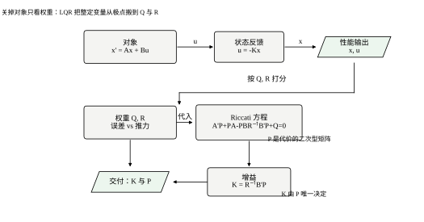
在推公式之前，先把 §55.1.1 那张表画出来。图 55-2 是同一初值下两条位移曲线与两条控制量曲线：黑实线是 LQR，红虚线是极点配置。
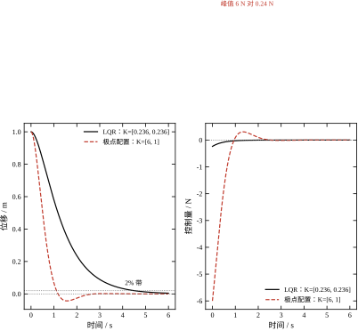
LQR 的位移曲线在 t=0 处的斜率是 0（因为 x_2(0)=0，且反馈不改变初速），然后缓慢下滑，4.5 s 才进 2\% 带；极点配置的曲线几乎是一条指数下坠，2.6 s 就到。控制量一侧的对比更刺眼：LQR 的峰值 0.236 N 出现在 t=0，之后单调衰减；极点配置的峰值 6 N 也在 t=0，但整个前 0.5 s 都维持在 4 N 以上。
哪条更好？没有绝对答案，取决于执行器有多贵、机构能承受多大冲击。LQR 的价值不在于给出“更好”的答案，而在于把这个问题变成一个可以量化讨论的兑换：改动 R 一个数，就能沿这条交换曲线滑动，且滑到任何一点都自动保证稳定。这是极点配置做不到的——极点配置需要你同时盯住两个极点坐标，还要事后验算增益大小。
本章所有数字都来自 code/ch055_sim.py 的二十五组报告（编号 1–25；报告 14 是口径对照，打印在最后），正文引用时标出报告编号；图全部由 code/ch055_figs.py 生成。
对象沿用第54章的 mass-spring-damper：m=1、k=2、c=3，状态取 [\,\text{位移},\ \text{速度}\,]^{\mathsf T}。初值统一取 x_0=[1,\;0]^{\mathsf T}，除非另作说明。默认权重 Q=I、R=1，这一组给出的 K=[0.236068,\;0.236068] 是本章的基准，后面所有对比都从它出发。第54章那组 K_{\mathrm{PP}}=[6,\;1] 保留为对照，用来显示“同样的闭环速度，不同的代价结构”。
看到 (55-1)，很自然会问：凭什么用 x^{\mathsf T}Qx 而不是 |x|，或者 \max|x|？这不是数学上的任意选择，有四个理由，每一个都足以单独支撑这个选择。
理由一：可微性。 动态规划要把代价函数对状态求偏导（§55.2 的 HJB 方程里有 \partial V/\partial x），变分法要把被积函数对 u 求偏导（§55.2.3 的极大值原理里有 \partial H/\partial u）。|x| 在原点不可微，\max|x| 处处是折点，两者都会让“令偏导为零”这一步失效。二次型是无穷可微的，而且在“既对称又光滑”的函数里是能保证有下界的最低阶选择——一次代价 c^{\mathsf T}x 不行，它没有下界，让 x 沿 -c 方向跑就能把代价压到 -\infty。
理由二：解落在有限维空间。 二次型的代价配线性对象，值函数 V(x) 也是二次型 x^{\mathsf T}Px，P 只有 n(n+1)/2 个未知数（本例 3 个）。这就把一个无穷维的泛函极值问题压成了一个代数方程组。若用四次型代价，V 也会是四次型，未知数从 3 个变成 15 个，方程变成非线性且可能有多解。
理由三：与能量和方差同构。 \int x^{\mathsf T}Qx\,dt 在 Q=I 时就是 \int\|x\|^2dt，与“总能量”同构；在随机情形下，\mathbb{E}[x^{\mathsf T}Qx] 就是状态协方差的加权迹，与“均方误差”同构（第56章卡尔曼滤波用的正是这个）。所以二次型不是在逼近某个真实代价，它本身就是工程上最常用的两种代价（能量与方差）的精确表达。
理由四：等价于线性二次高斯下的极大似然。 若过程噪声与测量噪声都是高斯的，负对数似然就是二次型。于是 LQR/LQG 的解同时也是极大似然解，这一点在第57章会把两套理论接起来。
二次型也有代价。它对大幅偏差的惩罚是平方增长，意味着“一个 10 米的偏差”被认为比“十个 1 米的偏差”严重十倍——这在工程上未必符合直觉（前者可能已经撞墙了）。L_1 代价给出的是稀疏解（大部分时间不出力，偶尔猛推），L_\infty 代价给出的是“最小最大”策略（把最坏情况压到最低），两者都比 LQR 更贴近某些实际需求，但都失去了闭式解。所以工程上的通行做法是：用二次型拿到闭式解与唯一性，再用权重与约束去逼近真正的需求。
本章从头到尾只用了一个对象：m=1、k=2、c=3。这个选择不是随手捡的，它同时满足五个“刚好”，让每一个结论都能被手算或两行代码验证。
刚好是二阶。 P 只有 p_{11}、p_{12}、p_{22} 三个未知数，CARE 写成三个代数方程就能手解，§55.4.1 因此能给出闭式解。若换成四阶，P 有 10 个未知数，闭式解基本不可能，读者只能看数值结果，无法判断“这个数为什么长这样”。
开环极点刚好是 -1 与 -2。 特征方程 s^2+3s+2=0 的两个根都是整数、相距一倍。这带来两个便利：其一，所有闭环极点都能用 \sqrt{4+1/R} 这样的简单式子写出；其二，“慢极点”与“快极点”从一开头就分得清，讨论 R\to0 的极限时不需要先做近似。顺带说，这个对象的阻尼比是 \zeta=c/(2\sqrt{km})=3/(2\sqrt2)=1.0607，自然频率 \omega_n=\sqrt2=1.4142 rad/s，属于过阻尼，阶跃响应没有超调——这一点让“峰值推力在 t=0”的判断变得干净。
B 刚好只作用在速度上。 B=[0,\;1]^{\mathsf T} 意味着推力不直接改变位移，只改变速度。于是 x_0=[1,\;0]^{\mathsf T} 时首拍控制量 u(0)=-k_1x_1(0)=-k_1，峰值推力与 k_1 是同一个数。§55.8.7 的反解能把“峰值 \le5 N”变成一个代数方程，靠的就是这条；§55.5.7 里“峰值掉一半”能与“k_1 掉一半”逐位对上，也是靠这条。
C 刚好是 [1,\;0]，直流增益刚好是 1/2。 输出取位移，u=2 时稳态位移为 1。于是参考跟踪的前馈增益有 N=2+k_1 这种能手算的形式（§55.9.7），不必调用任何公式库。若输出取速度，直流增益为零，跟踪问题就没法用静态前馈解决，属于另一类问题。
Q=I 时慢极点刚好钉在 -1。 这是最“巧”的一条：q_1=q_2 使 CARE 的两个对角方程在 p_{12}=p_{22} 处重合，慢极点与 R 脱钩（§55.4.2）。有了这个基准，才能用一句话说清“压 R 只能推快极点”——否则读者会怀疑是不是数值凑巧。而 §55.4.7 又把这条“巧合”推广成 -\sqrt{q_1}，说明它不是巧合。
代价是这个对象太干净，有三类问题它照不出来：多输入时 R 是矩阵、B 是多列，增益的方向性（哪个执行器更“有效”）无从体现；Q 半正定但不可检测的情形需要另一个例子，本章在 §55.2.4 用双积分器补；执行器饱和要靠外加限幅来构造，本章在 §55.10 用 \pm5 N 补。所以本章的结构是“一个主对象走通全流程，三个小例子补边界”，而不是每个结论换一个对象——后者会让读者失去纵向对比的锚点。
从 t 时刻的状态 x 出发，往后还要付多少钱？定义这个“剩余代价”为
V(x)=\min_{u(\cdot)}\ \int_t^{\infty}\big(x^{\mathsf T}Qx+u^{\mathsf T}Ru\big)\,d\tau \tag{55-3}
V 只依赖当前状态，不依赖 t——因为对象是定常的、积分上限是无穷、代价没有折扣。这个“与时间无关”的性质是后面能把它化成代数方程的根本原因。若代价带折扣因子 e^{-2\alpha t}，V 仍与 t 无关但方程会多一项 2\alpha V，对应 §55.9 讨论的“相对稳定度”。
在 [t,\;t+\Delta] 这一小段里，无论如何都要付 x^{\mathsf T}Qx+u^{\mathsf T}Ru 乘以 \Delta，之后的剩余代价是 V(x+\Delta\dot x)。最优性要求
V(x)=\min_{u}\Big[\big(x^{\mathsf T}Qx+u^{\mathsf T}Ru\big)\Delta+V(x+\Delta\dot x)\Big] \tag{55-4}
把 V(x+\Delta\dot x) 在 x 处展开到一阶，两边消去 V(x)、除以 \Delta、令 \Delta\to0，得
0=\min_{u}\Big[x^{\mathsf T}Qx+u^{\mathsf T}Ru+\Big(\frac{\partial V}{\partial x}\Big)^{\mathsf T}(Ax+Bu)\Big] \tag{55-5}
这就是 Hamilton-Jacobi-Bellman 方程（HJB）。方括号里对 u 是二次的，无约束极小点由求导给出：
2Ru+B^{\mathsf T}\frac{\partial V}{\partial x}=0 \ \Longrightarrow\ u^{\star}=-\frac{1}{2}R^{-1}B^{\mathsf T}\frac{\partial V}{\partial x} \tag{55-6}
代回 (55-5)，得到一个只含 V 的偏微分方程。到这里还是偏微分方程，难点在于 V 的形式未知。
注意到 (55-5) 里的每一项对 x 都是二次的（V 的梯度是一次，乘上 Ax+Bu 也是一次）。二次型空间在这个运算下封闭，所以可以合理地猜
V(x)=x^{\mathsf T}Px,\qquad P=P^{\mathsf T}\succeq0 \tag{55-7}
于是 \partial V/\partial x=2Px，(55-6) 变成 u^{\star}=-R^{-1}B^{\mathsf T}Px，即线性反馈，增益为
K=R^{-1}B^{\mathsf T}P \tag{55-8}
把 u=-Kx 与 (55-7) 一起代回 (55-5)，方括号内是
x^{\mathsf T}\big(Q+PBR^{-1}B^{\mathsf T}P\big)x+2x^{\mathsf T}PAx-x^{\mathsf T}PBR^{-1}B^{\mathsf T}Px
对一切 x 都要为零，去掉 x 得矩阵方程
A^{\mathsf T}P+PA-PBR^{-1}B^{\mathsf T}P+Q=0 \tag{55-9}
这就是连续时间代数 Riccati 方程（CARE）。它是二次矩阵方程（P 出现两次），不是线性方程，所以不能一步解出；但它是代数的，不是微分的，可以用迭代或 Schur 方法数值求解。这一个方程把“无穷维的泛函优化”压成了“n\times n 个未知量的代数方程组”。
对本章的二阶对象，P 只有三个未知量（对称），(55-9) 给出三个方程，恰好可解。脚本用 solve_continuous_are 求得的解是
P=\begin{bmatrix}1.236068&0.236068\\0.236068&0.236068\end{bmatrix}, \qquad K=[0.236068,\;0.236068] \tag{55-10}
把 P 代回 (55-9) 左边，残差的最大元素是 2.220\times10^{-16}，即机器精度。这个数值校验在该章所有算例里都要做，因为它同时检查了求解器与自己的矩阵是否抄错。
动态规划从“未来还要付多少”出发，极大值原理从“当下怎么最省”出发。构造 Hamilton 函数
H(x,u,\lambda)=x^{\mathsf T}Qx+u^{\mathsf T}Ru+\lambda^{\mathsf T}(Ax+Bu) \tag{55-11}
其中 \lambda 是协态（costate），物理上可以理解为“状态约束的影子价格”。最优解满足三件事：状态方程 \dot x=\partial H/\partial\lambda、协态方程 \dot\lambda=-\partial H/\partial x、以及 H 对 u 取极小的驻点条件
\frac{\partial H}{\partial u}=2Ru+B^{\mathsf T}\lambda=0 \ \Longrightarrow\ u=-\frac{1}{2}R^{-1}B^{\mathsf T}\lambda \tag{55-12}
协态方程展开是 \dot\lambda=-2Qx-A^{\mathsf T}\lambda。现在猜 \lambda=2Px，则 \dot\lambda=2P\dot x=2P(A-BK)x，代进去整理，得到的正是 (55-9)。两条完全不同的推导给出同一个 Riccati 方程，这不是巧合：HJB 是“值函数”的语言，极大值原理是“协态”的语言，两者通过 \lambda=\partial V/\partial x=2Px 互相翻译。
脚本对这条翻译做了数值核对（报告 6）：沿最优轨迹取点，检验 (55-12) 的残差是 0.000\times10^{0}（精确为零，因为 u 就是按它算的），检验协态方程的残差是 8.882\times10^{-16}。报告 7 则在 25 个网格点上检验 HJB，最大残差 1.776\times10^{-15}。三组残差都在机器精度，说明 P、K、\lambda=2Px 三者构成的解是自洽的。
(55-9) 是二次矩阵方程，一般有多个解。工程上只要那一个使 A-BK 稳定的解，称为稳定化解。它存在唯一的条件是两条：
第一条容易理解，第二条常被忽略。脚本给了一个反例（报告 5）：双积分器 \ddot x=u，取 Q=\mathrm{diag}(0,1) 只罚速度、不罚位置，R=1。求得 K=[0.000000,\;1.000000]，闭环极点是 -1.000000 与 0.000000——一个极点在虚轴上。解确实存在，但不稳定，因为位置这个模态不进代价，控制器懒得管它。把 Q 改成 \mathrm{diag}(10^{-6},1)，K=[0.001000,\;1.001000]，极点变成 -0.999999 与 -0.001000，两个都进左半平面了。10^{-6} 这么小的权重就足以把解“拉”到稳定分支上，代价是那个模态的时间常数变成 1000 s。
这条反例的工程含义很直接：Q 里不要留整行的零。 留零等于宣布“这个状态漂到无穷我也不在乎”，而物理上没有任何状态真的可以不在乎。
把 V(x)=x^{\mathsf T}Px 与 (55-3) 对照，立刻得到一个漂亮的结论：从 x_0 出发的最优代价是
J_{\min}=x_0^{\mathsf T}Px_0 \tag{55-13}
对本章的基准算例，x_0=[1,\;0]^{\mathsf T}，所以 J_{\min}=P_{11}=1.236068。脚本用 Lyapunov 方程分别算出状态积分 1.223607 与控制积分 0.012461，两者相加 1.236068，与 P_{11} 完全一致（报告 1）。这不是数值巧合，而是 (55-13) 的直接验证：P 的对角元就是“对应状态单位初值下的最优代价”。
这条性质让 P 有了除“求解中间量”之外的价值：它是闭环性能的一张完整价目表。P_{11} 是位移初值 1 m 的代价，P_{22} 是速度初值 1 m/s 的代价，非对角元刻画两者的耦合。比较两组权重的优劣，不必仿真，直接比 P 就行。
图 55-3 把 P 的元素与增益 k_1 随 R 的变化画在一张双对数图上，横轴反向（左端 R 小、右端 R 大）。
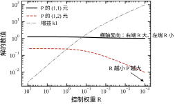
三个量在 R\ll1 的区间都是斜率 -\tfrac12 的直线，也就是都按 1/\sqrt{R} 增长。这解释了 §55.4 会给出的闭式解 k_1=\sqrt{1/R+4}-2：当 R 很小时 k_1\approx1/\sqrt{R}。图里的两个拐点也有意义：R 大到 10 以上，三条曲线都变平——此时“控制太贵”，再怎么加价，控制器也不肯多出力，K 趋于零，闭环退化为开环（极点回到 -1,-2）。R\to\infty 的极限值得记住，它是 LQR 的“不作为”边界。
前面所有推导都假设积分上限是无穷。这个假设在工程上并不总成立：MPC 每个采样周期只看未来 N 步，导弹的终端时间是固定的，电池放电过程的“无穷”其实是几分钟。上限改成有限值 T 后，解从代数方程变成微分方程。
设终端代价为 x(T)^{\mathsf T}Q_fx(T)（Q_f 常取零或取稳态 P），则 P(t) 满足
-\dot P=A^{\mathsf T}P+PA-PBR^{-1}B^{\mathsf T}P+Q,\qquad P(T)=Q_f \tag{55-14}
注意负号：这是一个从终端往起始时刻倒着积分的方程（终端条件已知，初值未知）。把 P 代进 (55-10) 就得到时变增益 K(t)=R^{-1}B^{\mathsf T}P(t)。
本章对象、Q=I、R=1、终端代价取零，用四阶 Runge–Kutta 从 T 倒积到 0，得到表 55-1 前几行的结果（只列 P_{11}(0)=J_{\min} 与 K(0)）。
| T | P_{11}(0) | K(0) | 与稳态之差 |
|---|---|---|---|
| 0.5 | 0.501214 | [0.015221,\ 0.156257] | 7.349\times10^{-1} |
| 1.0 | 0.882008 | [0.104519,\ 0.186059] | 3.541\times10^{-1} |
| 2.0 | 1.176587 | [0.210710,\ 0.225247] | 5.948\times10^{-2} |
| 5.0 | 1.235908 | [0.235997,\ 0.236036] | 1.595\times10^{-4} |
| 10.0 | 1.236067970 | — | 7.267\times10^{-9} |
| \infty | 1.236067977 | [0.236068,\ 0.236068] | 0 |
表 55-1 有限时域解向稳态解的收敛（Q=I，R=1，终端代价为零）
这张表有三个可用的结论。
第一，收敛是指数的，速率由最慢闭环极点决定。T 从 5 增到 10，误差从 1.595\times10^{-4} 降到 7.267\times10^{-9}，比值 2.2\times10^{4}，除以 5 秒后取对数得速率 2.0——正好是 2\times|\mathrm{Re}(-1)|。这给出一个实用判据：若 T 超过最慢闭环时间常数的 5 倍，用稳态解代替有限时域解，误差已经小于 10^{-3}。
第二，短时域下增益的方向会变。T=0.5 时 K(0)=[0.015221,\ 0.156257]，位移增益几乎为零，速度增益却比稳态值还小一点。物理解释很直接：只剩半秒，纠正位置已经来不及，不如先把速度刹住。随着 T 变长，位移增益从 0.015 涨到 0.236，两个分量才趋于相等。这个现象说明“最优增益”离不开“还剩多少时间”——稳态 LQR 隐含假设时间无限，短时域问题必须用 RDE。
第三，终端代价 Q_f 的选择等价于给“结束时的状态”定价。取 Q_f=P_\infty 时，有限时域解在 t=0 就精确等于稳态解（因为终端条件恰好是稳态解）；取 Q_f=0 就是本章表格的口径。MPC 里常用的做法是取 Q_f=P_\infty，这样能在有限预测步数下获得无穷时域的稳定性保证。
工程上还有一个细节：RDE 的数值积分必须倒着做，而倒积过程对舍入误差是敏感的，因为 -A^{\mathsf T}P-PA 这一项在 P 变大时会把误差放大。实践中的替代做法是解 DARE 或者用 Schur 方法直接求稳态解——只有在必须知道 P(t) 的整条轨迹时（例如 MPC 的终端约束、或时变系统的分析），才值得去积 RDE。
动态规划与极大值原理之外，还有一条更“线性代数”的路，它把 CARE 这个二次矩阵方程整个换成一个特征值问题。这条路是通用求解器 solve_continuous_are 内部真正走的路（Schur 方法），理解了它，就明白为什么这个方程“总能解出来”。
构造 2n\times2n 的 Hamiltonian 矩阵
H=\begin{bmatrix}A&-BR^{-1}B^{\mathsf T}\\-Q&-A^{\mathsf T}\end{bmatrix}
它的特征值一定关于虚轴对称：若 \lambda 是特征值，-\lambda 也是。本章对象、Q=I 时（报告 21）：
左边那两个稳定特征值，恰好就是闭环极点。 这不是新信息——它只是把 §55.4 的极点扫描重新算了一遍，但算法完全不同：前者解矩阵方程，后者解特征值问题。两者对得上，说明两条路在数学上等价。
具体做法是取稳定特征值对应的两个特征向量，拼成 2n\times n 的矩阵，上半部分记 V_1、下半部分记 V_2，则
P=V_2V_1^{-1}
数值核对（报告 21）：三种 R 下用这条式子算出的 P 与 solve_continuous_are 的差分别是 4.76\times10^{-16}、1.16\times10^{-15}、2.02\times10^{-14}，全在机器精度。而且 V_1 的条件数很温和，三种 R 下分别是 5.49、2.87、2.52——R 越小，条件数反而越好，这与“激进设计数值上更难”的直觉相反。
为什么这条式子成立？因为 Hamiltonian 矩阵正是“最优闭环 + 协态”联合系统的系数矩阵：把 \dot x=Ax-BR^{-1}B^{\mathsf T}\lambda 与 \dot\lambda=-Qx-A^{\mathsf T}\lambda 拼起来就是 \dot z=Hz，z=[x;\lambda]。稳定子空间对应“两者一起衰减”的那些初始条件，而 \lambda=Px 正是这个子空间的线性约束——于是 P 就是子空间的“斜率”。这也解释了 §55.2.3 里 \lambda=2Px 的来历（那里的系数 2 是因为 V=x^{\mathsf T}Px 求导后带出 2，把 \lambda 定义成 2Px）。
工程上有两点值得记住。第一，必须挑稳定子空间。若误取不稳定特征向量，会得到另一个满足 CARE 的矩阵，但它给出的是“反稳定”闭环，P 也不是正定的，代回残差校验同样为零——残差为零不能证明选对了，还要检查 \mathrm{eig}(A-BK) 是否都在左半平面。第二，H 的特征值对称性可以用来验算：算完之后看四个特征值是不是两两互为相反数，若否则说明 Q、R 的对称性被破坏了（例如 Q 有非对称的浮点误差）。
把三条路摆在一起比较：动态规划给的是“值函数满足 HJB”这一物理图像，极大值原理给的是“协态与最优律”这一变分图像，Hamiltonian 给的是“不变子空间”这一线性代数图像。三者解出同一个 P，但适用场景不同——推导与理解用前两条，写求解器用第三条。
多数教材把 P 当成“解 CARE 时的副产品”——反正 K=R^{-1}B^{\mathsf T}P 用完就丢。这是个浪费。P 本身至少有三个独立用途，而且都不需要重新算任何东西。
第一，它直接给出最优代价。 由 §55.2.5，从 x_0 出发的最优代价就是 x_0^{\mathsf T}Px_0。本章基准组 P=\begin{bmatrix}1.236068&0.236068\\0.236068&0.236068\end{bmatrix}、x_0=[1,0]^{\mathsf T}，于是 J=x_0^{\mathsf T}Px_0=P_{11}=1.236068，与报告 1 的时域积分 J_x+J_u=1.223607+0.012461=1.236068 逐位相同。这条等式在评审时特别有用：它让你不必跑仿真就能说出“这组权重下的理论最优代价是多少”，而仿真值只能验证不能预告。
第二，它是一个 Lyapunov 函数。 把 V(x)=x^{\mathsf T}Px 沿闭环求导：\dot V=x^{\mathsf T}\big[(A-BK)^{\mathsf T}P+P(A-BK)\big]x。代入 CARE 与 K=R^{-1}B^{\mathsf T}P，括号里的矩阵恰好等于 -(Q+K^{\mathsf T}RK)，于是
\dot V=-x^{\mathsf T}Qx-x^{\mathsf T}K^{\mathsf T}RKx\le0
这个式子比“极点都在左半平面”强，因为它是逐点成立的，不依赖线性。工程上的用法是：把 V 当成“能量”，在相平面上画等值线，就能直接看出哪些初值会被拉回原点、拉回的路上“能量”怎么掉。图 55-4 的等值线画的就是这个 V，只是当时是从“价值函数”的角度看的，本质是同一个二次型。
第三，它是切换与调度的公共裁判。 §55.9.6 提到增益调度：在几个工作点各算一个 K_i，运行时插值切换。切换稳不稳定，判据是“相邻两个闭环是否共享一个 Lyapunov 函数”，而最方便的候选就是各自的 P_i——若 P_i 与 P_{i+1} 接近（\|P_i-P_{i+1}\|/\|P_i\| 小），切换通常安全；若差得远，切换瞬间可能激起振荡。这也是为什么调度表不能取太密也不能取太疏：太密则计算量大，太疏则相邻 P 差太多。
三个用途里，第二个最容易被忽略，也最实用。因为它把“最优控制”与“Lyapunov 稳定性”这两套语言接上了——前者关心代价，后者关心稳定，P 同时是两者的证书。后面第57章讲 LQG 时，观测器的误差方程也会出现一个同类型的 P_e，那里的 V=e^{\mathsf T}P_ee 同样是“估计误差的能量”。两个 P、两个能量、两个 Lyapunov 函数，这个图像比记住两个 Riccati 方程更有用。
LQR 的设计不是“解一个方程”，而是“解一个方程加两轮对照”。完整流程有六步：
下面六小节逐步展开，用的都是本章的实跑数字，可以直接照抄到别的对象上。
模型来自建模，不是本章的内容。这里只强调两个检查。
可稳性检查：把 (A,B) 化成可控标准形，看不能控的模态是否都在左半平面。本章对象可控，\mathrm{rank}[B,\;AB]=\mathrm{rank}\begin{bmatrix}0&1\\1&-3\end{bmatrix}=2，通过。
可检测性检查：(Q^{1/2},A) 的能观性。它的含义是“代价里出现的状态是否都能被代价自行约束住”。若 Q 满秩，这一条自动成立（Q^{1/2} 满秩即可观）；若 Q 奇异，必须逐个检查零空间对应的模态。§55.2.4 的双积分器反例就是这一步没做。
这一步很容易跳过，因为大部分算例都通过。但一旦不通过，后面算出的 K 会“看起来正常、实际不稳定”，而仿真若只跑有限时间还可能看不出问题。
Q 与 R 有量纲，直接填数字没有意义。正确做法是把每个状态除以它的“可接受偏差”、把控制量除以它的“上限”，得到无量纲变量，再在这些变量上设权重。
一个通用起点是“单位权重”：所有被罚状态的允许偏差取同一个值，控制量取同一个上限。本章取位移允许偏差 1 m、速度允许偏差 2 m/s、推力上限 5 N，于是
Q=\mathrm{diag}\Big(\frac{1}{1^2},\ \frac{1}{2^2}\Big)=\mathrm{diag}(1,\;0.25), \qquad R=\frac{1}{5^2}=0.04 \tag{55-15}
这就是 §55.8 要正式介绍的 Bryson 规则。它给出的 K=[3.385165,\;1.692582]，峰值 3.3852 N，是上限 5 N 的 67.7\%，2\% 调节时间 2.910 s。作为第一版设计，这个结果已经可用：不超限、响应比开环快、增益量级适中。
如果连“允许偏差”都说不出来，说明指标还没定义清楚，此时任何权重都是瞎填。这种情况应该回到需求侧，而不是在 Q、R 上试数字。
解方程只需要一行代码（scipy.linalg.solve_continuous_are），但必须做残差校验。原因是 Riccati 求解器在接近奇异时会返回一个“数值上满足、物理上不是稳定化解”的 P，而残差校验能立刻发现它。
校验做法：把解出的 P 代回 (55-9)，取左边矩阵元素的最大绝对值。本章基准算例的残差是 2.220\times10^{-16}。经验阈值是“残差应小于 \|Q\| 的 10^{-8} 倍”；超过这个量级，先检查 Q、R 是否对称正定，再检查对象矩阵是否抄错。
第二项校验是闭环极点。对基准算例，\mathrm{eig}(A-BK)=\{-2.236068,\;-1.000000\}，两个都在左半平面。若出现右半平面极点，说明求到的不是稳定化解——通常因为 Q 有零行，或者 R 填成了非正数。
P 与 K 是数学量，要变成工程语言需要四个数：
这四个数一次算完，就完成了“数学解 → 工程指标”的翻译。若指标不合格，进入下一步；若合格，直接跳到第六步。
Q、R 看起来有五个独立数字（Q 三个、R 一个，再去掉整体标度），实际使用只需要两个旋钮：
操作顺序是先整体、后比例。原因是整体旋钮对指标的影响是单调的（R 小则快、R 大则慢），可以二分；比例旋钮的影响不单调，先动它会干扰对速度的判断。
以基准算例为例。假设指标要求 t_s\le2.5 s、峰值不超过 5 N。基准的 t_s=4.503 s 太慢，先用整体旋钮：R 除以 100，得 K=[8.198039,\;8.198039]，t_s=4.015 s，还是慢，而且峰值 8.198 N 已经超限。此时继续压 R 只会更糟：R=10^{-3} 给 K=[29.685959,\;29.685959]、峰值 29.686 N、t_s=3.944 s，速度几乎不再改善，推力涨了 3.6 倍。
问题出在对象本身，不在权重。它的两个极点 -1、-2 中有一个离虚轴很近，而 Q=I 时这个极点被“钉”在 -1 上（§55.4 证明），所以 t_s 有一个 4.5 s 左右的下限，怎么压 R 都突破不了。要突破，必须动比例旋钮：把 Q 的第一个元素从 1 加到 100（即把位置误差看得更贵），K=[8.198039,\;2.137711]，极点变成 -2.5689\pm\mathrm{j}1.8971，两个都离开了 -1，t_s 才有继续下降的空间。代价是最优开销 J 从 1.0820 涨到 46.3946（报告 3），即用 43 倍的代价换一对共轭极点。
这一段是本章最重要的一条经验：当整体旋钮失效时，先怀疑权重结构，别怀疑求解器。 单个极点被“钉住”往往意味着某个方向没有被代价约束住，或者约束得不对。
交付给实现环节的东西不止一个 K。至少包含五项：
dlqr）；缺第 5 项的后果在 §55.10 会用数字展示：一个在无约束下“最优”的 K，配上 \pm5 N 限幅后，响应会退回到比保守设计更差的位置。
把六步串起来跑一遍。假设指标是：单位位移初值下，2\% 调节时间不超过 2.5 s，峰值推力不超过 5 N。
第一轮按 Bryson 给起点：Q=I、R=1。结果是 t_s=4.503 s、峰值 0.2361 N。速度差了近一倍，推力却只用了上限的 4.7\%——这个组合明确告诉我们：瓶颈在状态权重，不在控制代价。此时若直接压 R 会走弯路（§55.8 的错误二就是这个）。
第二轮按“先调比例”的原则，把位移权重从 1 提到 10，R 保持 1：t_s=3.093 s、峰值 1.7417 N。速度改善有限，因为 R=1 时控制仍然“很贵”。
第三轮再压整体：R=0.3，得到 t_s=2.381 s、峰值 4.1101 N，两项指标都满足。若继续压到 R=0.1，t_s=1.955 s 更快，但峰值 8.1980 N 越过上限，不可用。
四组数字列在表 55-2。
| 权重 | K | 闭环极点 | J | 峰值推力 | t_s |
|---|---|---|---|---|---|
| Q=I，R=1 | [0.236068,\ 0.236068] | -2.2361,\ -1.0000 | 1.236068 | 0.2361 | 4.503 |
| Q=\mathrm{diag}(10,1)，R=1 | [1.741657,\ 0.671963] | -1.836\pm0.609\mathrm{j} | 7.739229 | 1.7417 | 3.093 |
| Q=\mathrm{diag}(10,1)，R=0.3 | [4.110101,\ 1.533601] | -2.2668\pm0.9858\mathrm{j} | 6.510227 | 4.1101 | 2.381 |
| Q=\mathrm{diag}(10,1)，R=0.1 | [8.198039,\ 2.949460] | -2.9747\pm1.1615\mathrm{j} | 5.467283 | 8.1980 | 1.955 |
表 55-2 按“先比例后整体”的顺序做的四轮试算（x_0=[1,0]^{\mathsf T}）
这张表有一个必须提醒的陷阱：J 的数值不能在行与行之间横着比。 第一行 J=1.236 看着最小，但它的 Q 与后三行不同，量的不是同一件事。J 只在固定 (Q,R) 的前提下有意义（用于比较不同 K 的好坏），跨权重比较 J 就像拿摄氏度和华氏度直接比大小。真正能横着比的是峰值与 t_s，因为它们是物理量。
第三、四行的极点都成了共轭对，阻尼比分别是 0.917 与 0.932，没有明显超调——这是 q_1 变大后的典型形态：位置被看得更贵，控制器愿意用一个略带振荡的快速模态去换位置误差的快速收敛。
最终选第三行：K=[4.110101,\ 1.533601]，峰值余量 18\%，t_s 余量 4.8\%。两项余量都不大，说明这组指标本身就比较紧；若执行器实际能力只有 4 N，就该退回 R=0.4 附近再试，而不是指望限幅器兜底。
这就是六步流程的实际样子：不是解一次 CARE，而是解四次并做一张对照表。 有经验的设计者会把这张表当成交付物的一部分，因为它记录了“为什么选这一组”，比单独一个 K 有用得多。
第二步的两个秩条件是纸面上的前提，实际设计时很容易漏检，因为求解器不会替你检查。它只会给你一个 P，然后你在现场发现闭环在漂。报告 5 用一个双积分器把两种症状都演了一遍。
双积分器 A=\begin{bmatrix}0&1\\0&0\end{bmatrix}、B=[0,1]^{\mathsf T}，取 Q=\mathrm{diag}(0,1)——只罚速度，不罚位移。这个 Q 是半正定的，看着完全合法。求解器也确实给了解：
K=[0.000000,\ 1.000000],\qquad \mathrm{eig}(A-BK)=\{-1.000000,\ 0.000000\}
一个极点稳稳停在原点。P 满足 CARE，残差是机器精度，K 也算得干干净净——但闭环不是渐近稳定的。原因就是 (Q^{1/2},A) 不可检测：位移这个模态既不被罚（Q 的第一行全零），又只通过积分间接影响被罚的速度，于是“位移漂到任何地方都不花钱”，最优解当然不会去管它。K_1=0 就是这个意思：位移偏多少都不推。
更隐蔽的是第二种症状。把 Q 的第一元从 0 改成 10^{-6}，秩条件形式上满足了：
K=[0.001000,\ 1.001000],\qquad \mathrm{eig}(A-BK)=\{-0.999999,\ -0.001000\}
两个极点都在左半平面，稳定性判据通过，残差也通过。但那个 -0.001 的时间常数是 1000 s——十六分钟。在仿真里跑 10 s 看不出任何异常，在实机上它表现为“零点几毫米的缓慢漂移”，直到撞到限位才被发现。这就是“技术上稳定、工程上不稳定”。
两条教训可以写进检查清单：
至于可稳性 (A,B) 不满足的情形，症状更直接：求解器会抛异常或返回 inf，因为它找不到任何使 P 正定的解。这一类不需要额外检查，程序会替你拦住。真正危险的是可检测性——它不报错，只给你一个“看起来对”的答案。
一般的 CARE 只能数值求解，但本章这个二阶对象恰好有闭式解，手算一遍能把 K 的每一分钱花在哪里看得很清楚。
取 Q=I、R 为标量，设 P=\begin{bmatrix}p_{11}&p_{12}\\p_{12}&p_{22}\end{bmatrix}。把 A=\begin{bmatrix}0&1\\-2&-3\end{bmatrix}、B=[0,\;1]^{\mathsf T} 代入 (55-9)，先看 (1,1) 元。A^{\mathsf T}P+PA 的 (1,1) 元是 -4p_{12}，而 PBR^{-1}B^{\mathsf T}P=\frac{1}{R}(PB)(PB)^{\mathsf T}，其中 PB=[p_{12},\;p_{22}]^{\mathsf T}，所以它的 (1,1) 元是 p_{12}^2/R。于是
-4p_{12}-\frac{p_{12}^2}{R}+1=0 \ \Longrightarrow\ p_{12}^2+4Rp_{12}-R=0 \tag{55-16}
取正根 p_{12}=R\big(\sqrt{4+1/R}-2\big)。再看 (2,2) 元：2p_{12}-6p_{22}-p_{22}^2/R+1=0，把 p_{12}=p_{22}（这个等式由 K=R^{-1}B^{\mathsf T}P 的两个分量相等得到）代入，恰好与 (55-16) 同解。所以
k_1=k_2=k=\sqrt{\frac{1}{R}+4}-2, \qquad p_{12}=p_{22}=kR \tag{55-17}
(1,2) 元给出 p_{11}=k^2R+5kR，于是最优代价
J_{\min}=p_{11}=R\big(k^2+5k\big)=\frac{u+3}{u+2}, \qquad u=\sqrt{4+\frac{1}{R}} \tag{55-18}
这两个式子是本章后面所有定量讨论的基准。它们只对“Q=I、单输入、A 是这个特定形式”成立，但结论的形状很有代表性：增益按 1/\sqrt{R} 走，代价按 1/(1+\text{常数}\cdot\sqrt{R}) 走。 前者是激进度的度量，后者几乎不敏感——下一小节会看到这个反差有多刺眼。
把 k 代回闭环特征多项式：
s^2+(3+k)s+(2+k)=(s+1)\big(s+2+k\big) \tag{55-19}
也就是说，闭环极点恒定是 -1 与 -\big(2+k\big)=-\sqrt{4+1/R}。前一个极点与 R 毫无关系，从 R=100 到 R=10^{-4} 一直停在 -1。
为什么？因为 Q=I 对两个状态“一视同仁”，而这对 (A,B) 恰好有一条零代价方向：沿某个方向的状态组合，其代价与控制代价的比值与 R 无关，最优解不需要为它花额外的力，于是它的衰减率锁在开环的那个模态上。这个现象在数值上非常稳定——报告 2 的七行里，第二个极点从 -2.002498 一路推到 -100.019998，第一个始终是 -1.000000。
工程含义要紧：2\% 调节时间由最慢的极点决定，e^{-t} 衰减到 2\% 需要 \ln 50=3.9 s，实测 4.5 s（还叠了另一个模态的初值激励）。所以只要 Q=I，t_s 就卡在 4\sim5 s，压 R 只能把另一个极点推远，对 t_s 几乎无用。表 55-3 的后两列就是这个事实的完整记录。
表 55-3 是 Q=I 时 R 从 100 扫到 10^{-4} 的结果（报告 2）。J 列是 x_0^{\mathsf T}Px_0，即该权重下的最优代价。
表 55-3 Q=I 时控制权重 R 的七组对照（x_0=[1,0]^{\mathsf T}）
| R | K | 闭环极点 | J_{\min} | 峰值推力 | 2\% 调节 |
|---|---|---|---|---|---|
| 100 | [0.002498,\;0.002498] | -2.002498,\;-1.000000 | 1.2498 | 0.0025 | 4.599 s |
| 10 | [0.024846,\;0.024846] | -2.024846,\;-1.000000 | 1.2485 | 0.0248 | 4.588 s |
| 1 | [0.236068,\;0.236068] | -2.236068,\;-1.000000 | 1.2361 | 0.2361 | 4.503 s |
| 0.1 | [1.741657,\;1.741657] | -3.741657,\;-1.000000 | 1.1742 | 1.7417 | 4.223 s |
| 0.01 | [8.198039,\;8.198039] | -10.198039,\;-1.000000 | 1.0820 | 8.1980 | 4.015 s |
| 0.001 | [29.685959,\;29.685959] | -31.685959,\;-1.000000 | 1.0297 | 29.6860 | 3.944 s |
| 10^{-4} | [98.019998,\;98.019998] | -100.019998,\;-1.000000 | 1.0098 | 98.0200 | 3.922 s |
看三列就够了。峰值推力从 0.0025 N 涨到 98.02 N，四万倍；t_s 从 4.599 s 只降到 3.922 s，掉 14.7\%；J 从 1.2498 降到 1.0098，掉 19.2\%。推力涨四万倍换来一成多的速度，这就是 Q=I 时的兑换率。
J 为什么几乎不动？因为 J 里控制项是 Ru^2。R 缩小 100 倍，u 只涨 10 倍（峰值 0.2361\to8.1980），Ru^2 反而缩小 100 倍。所以“用力”这一项在 R 很小时自动变得微不足道，J 被状态积分主导，而状态积分又由钉在 -1 的那个极点主导，自然不动。这说明二次型代价对峰值推力几乎没有分辨能力——它只在乎“用力的平方乘时间”，不在乎“某一瞬间用了多大力”。后者恰恰是执行器最在乎的，§55.10 会算这笔账。
图 55-4 把 V(x)=x^{\mathsf T}Px 在状态平面上的等值线画出来（R=1 的基准），并叠加了四条从不同初值出发的闭环轨迹。
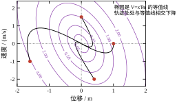
等值线是一族同心椭圆，长短轴之比由 P 的两个特征值决定。本章 P 的两个特征值是 0.183141 与 1.288995，比值 7.04，所以椭圆相当扁——同一个 V 值下，速度方向可以跑得比位移方向远得多。这符合直觉：速度的允许偏差本来就大（Bryson 规则给 2 m/s），代价自然“便宜”。
四条轨迹每一处都穿过等值线并往内走，这是 HJB 的几何含义：\dot V=-x^{\mathsf T}Qx-u^{\mathsf T}Ru<0，V 沿轨迹严格下降。注意轨迹并不与等值线正交，除非 Q、R 取特殊值——最优性只要求“下降最快”，不要求“沿梯度方向”。
把 §55.1 的对照做得更公平一点：让 LQR 的峰值推力也等于 6 N。由 (55-17) 令 k=6，得 \sqrt{4+1/R}=8、R=1/60。这时 K=[6.000000,\;6.000000]，极点是 -1 与 -8，J_{\min}=1.100000，t_s=4.0455 s。
对照第54章的 K=[6,\;1]：峰值同为 6 N，极点 -2\pm\mathrm{j}2，t_s=2.591 s，但按同一把尺子（Q=I、R=1）算的开销是 9.875000。
结果很清楚：在峰值推力相同的条件下，极点配置把两个极点都推到了 -2，LQR 却把一个留在 -1、把另一个推到 -8。 所以极点配置的 t_s 更短（2.591 对 4.0455），但代价大 9 倍。原因不是 LQR “算错了”，而是两者的目标不同：LQR 最小化的是 \int(x^{\mathsf T}x+u^{\mathsf T}u)dt，这个积分对“最后那点尾巴”很敏感，于是它宁愿让系统慢慢收尾、也不愿意在中段猛用力；极点配置只看“极点在哪”，完全不管中段花了多少力。
这条对照也回答了 §55.1.1 留下的问题：LQR 的“慢”不是缺陷，是代价函数的口味。要让 LQR 变快，正确的做法是改权重（加大 Q 的第一个元素），而不是质疑它为什么不肯把极点推到 -2。
把 R 从 10^{4} 一路压到 10^{-6}，极点轨迹只有两个方向：一个几乎不动，一个向负无穷跑。表 55-4 摘了七个点。
| R | 慢极点 | 快极点 | k_1=k_2 |
|---|---|---|---|
| 10^{4} | -1.000000 | -2.000025 | 0.000025 |
| 100 | -1.000000 | -2.002498 | 0.002498 |
| 1 | -1.000000 | -2.236068 | 0.236068 |
| 0.01 | -1.000000 | -10.198039 | 8.198039 |
| 0.001 | -1.000000 | -31.685959 | 29.685959 |
| 10^{-4} | -1.000000 | -100.019998 | 98.019998 |
| 10^{-6} | -1.000000 | -1000.001998 | 998.001998 |
表 55-4 R 两端极限下的极点位置（Q=I）
R\to\infty 的极限是“不作为”。 k\to0，闭环退回开环，两个极点回到对象自己的 -1 与 -2。这不是设计失败，而是代价函数的必然：若控制贵到离谱，最优策略就是什么都不做。工程含义是 R 不能无限加大——加到 10^{4} 时 k_1=0.000025，增益小到连量化噪声都能盖过去。
R\to0 的极限是“一个极点换一个极点”。 k\approx1/\sqrt{R}，快极点 -\sqrt{4+1/R}\approx-1/\sqrt{R} 随 R 减半而乘 \sqrt2（表里 R 从 10^{-4} 到 10^{-6} 缩小 100 倍，快极点从 -100 到 -1000，正好 10 倍）。慢极点却纹丝不动。于是 t_s 被慢极点锁死：R 再小也只能改善到 3.9 s 附近（§55.4.3 的七行从 4.599 到 3.922 就是这个下界在逼近）。
为什么慢极点恰好是 -1 而不是别的数？ 把 (55-19) 展开就能看出，这完全由“p_{22}=p_{12}”这个结构决定：闭环特征多项式是 s^2+(3+k)s+(2+k)，代入 s=-1 恰好得 1-(3+k)+(2+k)=0，与 k 无关。而 p_{22}=p_{12} 又来自 Q=I 时 CARE 的 (1,1) 与 (2,2) 两个方程在 p_{22}=p_{12} 处重合（两边都化成 -4p-p^2/R+1=0）。换句话说，-1 这个极点是 Q 的两个对角元相等、且 B 只在第二个状态上施加控制的直接后果，不是数值巧合。
这条推导也解释了怎样打破它：只要 q_1\ne q_2，两个方程不再重合，p_{22}\ne p_{12}，-1 就会松开。§55.3.8 把 q_1 提到 10 之后，极点变成 -1.836\pm0.609\mathrm{j}，正是这个机制在起作用。想让 t_s 突破 4 s，唯一的路径是动 Q 的比例，而不是压 R——这是本章最实用的一条结论。
上一小节说“-1 是 q_1=q_2=1 的产物”，那么把 q_1 换成别的数，慢极点会跑到哪里？答案是恰好跑到 -\sqrt{q_1}，与 R 无关。
做法是固定 Q=\mathrm{diag}(q_1,\,1)，把 R 压到 10^{-6} 与 10^{-8}，看闭环极点的两个根。报告 15 的结果（慢极点指靠近虚轴的那个）：
慢极点这一列与 -\sqrt{q_1} 的差全部在 10^{-3} 以内，而且把 R 从 10^{-6} 再压到 10^{-8}，慢极点一位数字都不动。与此同时快极点几乎只由 R 决定：五组 q_1 下它都落在 -1000 附近，正是 -1/\sqrt{R}。把这两条合起来写：
\lambda_{\text{慢}}\to-\sqrt{q_1}, \qquad \lambda_{\text{快}}\to-\frac{1}{\sqrt{R}}, \qquad R\to0 \tag{55-20}
增益的两条对应极限也可以从根与系数的关系直接读出。闭环特征多项式是 s^2+(3+k_2)s+(2+k_1)，两根之积等于 2+k_1、两根之和等于 3+k_2（取负号）。代入 (55-20)：
k_1\to\sqrt{\frac{q_1}{R}}-2, \qquad k_2\to\sqrt{q_1}+\frac{1}{\sqrt{R}}-3 \tag{55-21}
拿 q_1=10、R=10^{-6} 核对：\sqrt{10/10^{-6}}=3162.2777，实测 k_1+2=3162.2783，相对差 2\times10^{-7}；k_2 的公式给 3.162+1000-3=1000.162，实测 1000.1598。两条都对得上。
这两条定律把 §55.4.2 的“巧合”变成了可计算的规律。-1 不是什么特殊数字，它就是 \sqrt{1}；换成 q_1=4 就得到 -2，换成 q_1=100 就得到 -10。Q 的第一个对角元直接决定慢模态的时间常数，R 只决定快模态能跑多快。 两个旋钮各管一件事，互不越界——这是二阶对象上最干净的一条分工。
工程上最有用的是它的推论：2\% 调节时间的下界是
t_{s,\min}\approx\frac{\ln 50}{\sqrt{q_1}}=\frac{3.912}{\sqrt{q_1}} \tag{55-22}
以 q_1=10 为例，下界 1.237 s，而报告 16 用二分法把 R 一路压到 10^{-6} 实测到 1.239 s，只差 0.16\%。所以想让 t_s 低于 1.24 s，压 R 是徒劳的，只能把 q_1 提上去；q_1 提到 40 才能指望 0.62 s。而 q_1 每提四倍，t_s 下界减半，代价是峰值推力大约翻倍（k_1\propto\sqrt{q_1}）——又是一次“速度换推力”的兑换，只不过这次兑换率由 Q 而不是 R 决定。
还有一点值得记住：这两条定律只在 R\to0 时严格成立。报告 15 的后四行把 q_1=10 的 R 逐步放开：R=1 时极点是 -1.836\pm0.609\mathrm{j}，两个根还是复的，谈“一快一慢”没有意义，实部与两条极限分别差 41.9\% 与 83.6\%；R=0.1 时仍是复根 -2.9747\pm1.1615\mathrm{j}，偏差 5.9\%；R=0.01 才裂成两个实根 -3.2619 与 -9.7139，偏差 3.2\% 与 2.9\%；R=10^{-3} 时偏差降到 0.3\%。所以实操上把 R 压到比 q_1 小两个数量级，这两条公式就可以当估算器用——反过来说，在 R 与 q_1 同量级时用它们做设计，会高估慢模态的衰减能力，这是很容易踩的一个坑。
§55.4.4 与 §55.7.2 都说“加大 q_1 让两个极点分开走”，但没交代分到哪儿为止。把 R=1 固定、q_1 从 0.1 拉到 100，报告 22 给出九行实测：
| q_1 | 闭环极点 | \zeta | \omega_n | 阶跃超调 | 峰值 u | 阶跃 t_s |
|---|---|---|---|---|---|---|
| 0.1 | -2.2833,\ -0.8868 | — | — | 0 | 2.0248 | 4.966 |
| 0.5 | -2.2630,\ -0.9374 | — | — | 0 | 2.1213 | 4.744 |
| 1 | -2.2361,\ -1.0000 | — | — | 0 | 2.2361 | 4.504 |
| 2 | -2.1753,\ -1.1260 | — | — | 0 | 2.4495 | 4.116 |
| 4 | -2.0000,\ -1.4142 | — | — | 0 | 2.8284 | 3.570 |
| 6 | -1.7553\pm0.2848\mathrm{j} | 0.9871 | 1.7783 | 0.000% | 3.1623 | 3.198 |
| 10 | -1.8360\pm0.6090\mathrm{j} | 0.9492 | 1.9343 | 0.008% | 3.7417 | 2.715 |
| 20 | -1.9873\pm0.9744\mathrm{j} | 0.8979 | 2.2134 | 0.165% | 4.8990 | 2.113 |
| 100 | -2.5689\pm1.8971\mathrm{j} | 0.8044 | 3.1934 | 1.421% | 10.1980 | 1.188 |
第一件事：分界点恰好是 q_1=5。 闭环特征多项式是 s^2+(3+k_2)s+(2+k_1)，判别式 (3+k_2)^2-4(2+k_1) 穿过零的那一点就是两个实根合成重根的地方。报告 22 用二分法把这一点夹到 10^{-10} 以内，得到 q_1^\ast=5.000000，对应 K=[1.000000,\;0.464102]，重根在 -1.732051=-\sqrt{3}。这不是凑出来的数字：k_1=1 意味着 \sqrt{4+q_1/R}=3，解出 q_1/R=5。换句话说，R=1 时临界阻尼的权重是 Q=\mathrm{diag}(5,1)，q_1<5 过阻尼，q_1>5 欠阻尼。
这个临界点会跟着 R 走，而且关系不是“正比”这种简单形式。同一次二分在四档 R 上给出：
q_1^\ast:\quad R=10\Rightarrow25.025,\qquad R=1\Rightarrow5.000,\qquad R=0.1\Rightarrow5.225,\qquad R=0.01\Rightarrow27.522
四行对应的 k_1^\ast 分别是 0.550000、1.000000、5.500000、50.500000——统一满足 k_1^\ast=0.5+0.5/R，也就是 (k_1^\ast+2)^2-4=q_1^\ast/R。把这条代回去就能复现上表全部四行到六位小数。所以设计时不必二分：先按 k_1^\ast=0.5+0.5/R 算出临界增益，再由 q_1^\ast=R\big[(2.5+0.5/R)^2-4\big] 换成权重。这个表达式只对本对象成立（它由 A 的系数决定），但推导路径是通用的——任何二阶对象都能照这个套路算出自己的临界权重。
第二件事：阻尼比掉得很慢。 q_1 从 5 提到 100（二十倍），\zeta 只从 1 掉到 0.8044。这条曲线在工程上很有用：想要“快且不过冲”，把 q_1 放在 5\sim20 之间就够了，\zeta 保持在 0.90 以上；再往上加，\zeta 继续掉，超调开始出现，而 t_s 的收益已经很小（2.715\to1.188，只快了一倍多，见 §55.4.7 的 1/\sqrt{q_1} 定律）。
第三件事：超调严格服从二阶公式。 拿 \zeta=0.8044 代入 \exp(-\pi\zeta/\sqrt{1-\zeta^2}) 得 1.4211\%，实测 1.421\%；\zeta=0.8979 给 0.1648\%，实测 0.165\%；\zeta=0.9492 给 0.0077\%，实测 0.008\%。三个点全对上，原因很简单：本对象是全状态反馈、输出取位移，闭环传递函数是 1/\big(s^2+(3+k_2)s+(2+k_1)\big)，没有零点，超调公式的适用条件正好满足。这条核对比“经验上差不多”硬得多——它说明在这个对象上，LQR 给出的闭环就是一个标准二阶系统，所有教科书上的二阶指标都可以直接查表用。
第四件事：账单开在执行器上。 峰值 u 那一列其实就是前馈增益 N（因为阶跃的初始控制量就是 N，见 §55.9.7），它从 2.02 一路涨到 10.20。q_1 涨一千倍，推力涨五倍——这个兑换率比 R 那条通道温和得多（R 从 1 压到 10^{-4} 时峰值从 0.236 涨到 98.0，见报告 2），原因是 k_1\propto\sqrt{q_1} 而 k_1\propto1/\sqrt{R}，两者都是平方根，但 R 的基数小，同样的倍数在绝对值上放大得更狠。真要提快速性，优先动 q_1 而不是压 R。
§55.4.7 的极限定律很诱人——继续压 R，快极点就继续往左跑。但纸面上的极限与机器上的极限不是一回事。报告 25 把 R 从 10^{4} 一路压到 10^{-8}，记录解矩阵 P 的条件数与 CARE 残差：
| R | \mathrm{cond}(P) | \lambda(P) | CARE 残差 | 闭环极点 |
|---|---|---|---|---|
| 10^{4} | 6.85 | 1.309,\ 0.191 | 1.05\times10^{-15} | -2.0000,\ -1.0000 |
| 10^{2} | 6.86 | 1.309,\ 0.191 | 7.47\times10^{-16} | -2.0025,\ -1.0000 |
| 1 | 7.04 | 1.289,\ 0.183 | 3.16\times10^{-16} | -2.2361,\ -1.0000 |
| 10^{-2} | 14.46 | 1.089,\ 0.075 | 3.57\times10^{-15} | -10.1980,\ -1.0000 |
| 10^{-4} | 104.05 | 1.010,\ 0.0097 | 1.26\times10^{-14} | -100.0200,\ -1.0000 |
| 10^{-6} | 1004.00 | 1.001,\ 0.000997 | 2.35\times10^{-12} | -1000.0020,\ -1.0000 |
| 10^{-8} | 10004.00 | 1.000,\ 9.997\times10^{-5} | 1.11\times10^{-11} | -10000.0002,\ -1.0000 |
两件事值得注意。第一，条件数按 R^{-1/2} 长，不是 R^{-1}。 从 10^{-4} 往下，条件数依次是 104、1004、10004，正好是 R^{-1/2} 的三档；看特征值更直接——最大特征值趋于 1，最小特征值约等于 \sqrt{R}（10^{-2}、10^{-3}、10^{-4}）。这也解释了为什么 R 压到 10^{-8} 还能算：R^{-1/2}=10^{4} 只是“损失四位有效数字”，双精度有十六位，扛得住。
第二，残差跟着变大，但变大得很慢。 从 10^{-15} 到 10^{-11}，涨了四个数量级；同一区间里 R 掉了十二个数量级。所以 CARE 的数值求解比直觉更稳——只要用双精度，R 压到 10^{-8} 仍然给出正确的极点（-10000.0002 与公式 -1/\sqrt{R}=-10000 只差 2\times10^{-8}）。
真正的风险在定点或单精度实现。单精度只有约七位有效数字，条件数 10^{4} 就意味着增益只剩三位可信；若 R=10^{-6}（条件数约 10^{3}），k_1=1000 的三位有效数字是 1.00\times10^{3}，误差 1\%——还在 §55.10.7 那个“四位小数够用”的范围边缘。再往下压就必须上双精度，或者按 §55.10.5 的约定一先把 Q 归一化、把量级拉近。
所以“能不能压 R”有三个答案：数学上能（R>0 就有解），双精度上能（到 10^{-8} 都正常），单精度上不能（10^{-4} 以下就该停）。而 §55.4.7 又说过，R 压到比 q_1 小两个数量级之后 t_s 几乎不再改善——两条边界叠在一起，实际可用的 R 区间比想象中窄得多，这也从另一面印证了“想提快速性就动 q_1”。
上面所有结论都是连续时间的。真实控制器每个采样周期算一次 u=-K_dx_k，中间靠零阶保持。如果采样足够快，直接把 K 拿来用不会有问题；如果采样慢，K 与 K_d 的差别会变成性能损失，甚至失稳。
离散 LQR 不是“把连续解离散化”，而是重新定义一个问题：代价从积分换成求和，
J_d=\sum_{k=0}^{\infty}\big(x_k^{\mathsf T}Qx_k+u_k^{\mathsf T}Ru_k\big), \qquad x_{k+1}=A_dx_k+B_du_k \tag{55-23}
注意这里没有乘 T_s。乘不乘只改变 J_d 的数值，不改变最优解（相当于把 Q、R 同时缩放），所以约定俗成省掉。这一点在对照连续与离散的 J 值时必须记牢，否则会差一个 T_s 因子。
离散版的“剩余代价”是 V_k(x)=x^{\mathsf T}P_kx，它满足
V_k(x)=\min_{u}\Big[x^{\mathsf T}Qx+u^{\mathsf T}Ru+V_{k+1}(A_dx+B_du)\Big] \tag{55-24}
方括号对 u 求导置零：2Ru+2B_d^{\mathsf T}P_{k+1}(A_dx+B_du)=0，解出
u=-\big(R+B_d^{\mathsf T}P_{k+1}B_d\big)^{-1}B_d^{\mathsf T}P_{k+1}A_d\,x \tag{55-25}
代回 (55-24)，得到 P_k 与 P_{k+1} 的递推。稳态时 P_k=P_{k+1}=P，递推变成代数方程
P=A_d^{\mathsf T}PA_d-A_d^{\mathsf T}PB_d\big(R+B_d^{\mathsf T}PB_d\big)^{-1}B_d^{\mathsf T}PA_d+Q \tag{55-26}
这就是离散代数 Riccati 方程（DARE），离散增益为
K_d=\big(R+B_d^{\mathsf T}PB_d\big)^{-1}B_d^{\mathsf T}PA_d \tag{55-27}
与连续情形相比，(55-26) 多了一个“R+B_d^{\mathsf T}PB_d”而不是单纯的 R。这一项不是数学装饰：它表示“这一步的控制不仅立刻花钱，还会改变下一步的状态，从而改变未来的代价”。采样越慢，B_d 越大，这一项越重，K_d 与 K_c 的差别也越大。
把 T_s 从 0.2 s 缩到 0.001 s，逐点对比 K_d 与连续解 K_c=[0.236068,\;0.236068]，得到表 55-5（报告 8）。
表 55-5 离散增益与连续解的偏差随采样周期的一阶收敛（Q=I，R=1）
| T_s / s | K_d | 闭环 z 极点 | \|K_d-K_c\| |
|---|---|---|---|
| 0.200 | [0.185347,\;0.182657] | 0.640573,\;0.818325 | 5.341\times10^{-2} |
| 0.100 | [0.210017,\;0.209293] | 0.799815,\;0.904781 | 2.677\times10^{-2} |
| 0.050 | [0.222934,\;0.222747] | 0.894246,\;0.951222 | 1.332\times10^{-2} |
| 0.020 | [0.230797,\;0.230767] | 0.956266,\;0.980198 | 5.301\times10^{-3} |
| 0.010 | [0.233430,\;0.233423] | 0.977888,\;0.990050 | 2.645\times10^{-3} |
| 0.005 | [0.234749,\;0.234747] | 0.988882,\;0.995012 | 1.321\times10^{-3} |
| 0.001 | [0.235804,\;0.235804] | 0.997766,\;0.999000 | 2.640\times10^{-4} |
报告 9 把这张表的后两列做成“减半测试”：T_s 每减半，误差依次缩小 0.996、1.007、1.006、1.004、1.002 倍。倍率是 1，不是 2 也不是 4，说明
\|K_d-K_c\|=O(T_s) \tag{55-28}
是一阶收敛，而不是很多人以为的二阶。这个结论值得强调，因为它与“零阶保持离散化是精确的”这句常听到的话容易混淆：ZOH 对开环响应是精确的，但对最优增益不是——连续 LQR 最小化的是连续积分，离散 LQR 最小化的是采样点求和，两个目标本来就不同，T_s\to0 时才对上。
实践含义：若要求 K_d 与 K_c 的差别小于 1\%（即 0.0024），T_s 需小到 0.01 s 左右。这个量级与“采样频率取闭环带宽的 20 到 40 倍”的经验一致：本章闭环带宽约 2.2 rad/s，T_s=0.01 s 对应采样频率 628 rad/s，约 285 倍带宽。
图 55-5 左右两个面板合起来看这张表。左面板是误差随 T_s 的变化，双对数坐标，灰虚线是斜率 1 的参考线，七个点紧贴它；右面板是 z 平面上的闭环极点，三组 T_s 对应三对点。
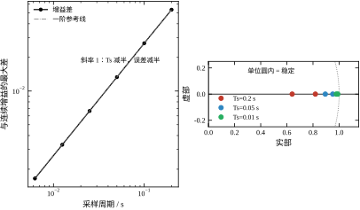
右面板里的点全部落在单位圆内，且沿实轴分布——因为连续极点是实数，映射 z=e^{sT_s} 后仍是实数。T_s=0.2 时两个点是 0.6406 与 0.8183，T_s=0.05 时是 0.8942 与 0.9512，T_s=0.01 时是 0.9779 与 0.9901。它们分别对应 e^{-2.236T_s} 与 e^{-1\cdot T_s}：T_s=0.05 时 e^{-0.1118}=0.8942、e^{-0.05}=0.9512，与表 55-5 完全对上。
模长本身是可以直接换算的：z=0.6406 对应等效连续极点 \ln(0.6406)/0.2=-2.227，与真实的 -2.236 只差 0.4\%。所以表 55-5 里的 z 极点并没有“骗人”。真正的风险在更粗的采样上：T_s 大到使 |s|T_s 接近 \pi 时，快速模态会被折叠成慢速模态，此时 z 极点看起来仍在单位圆内很安全，实际响应却已经面目全非。判断采样是否够快不能只看 |z|<1，要看 K_d 与 K_c 的差，或者看采样间是否出现明显阶梯。
上机时有三件事必须与离散 LQR 的假设对齐，否则 K_d 的理论最优性会打折扣。
第一，u_k 在整个 [kT_s,\;(k+1)T_s) 内保持不变。这是 ZOH 假设，也是 DARE 推导的前提。若驱动器内部还有更快的闭环（比如电流环），它的动态必须并入 B_d，否则模型与实现不符。
第二，状态必须是同一时刻的采样值。u_k=-K_dx_k 里的 x_k 应当是 kT_s 时刻的估计值，若观测器有一步延迟，等效于给回路串了一个 z^{-1}，相位裕度会掉。这一点在 §55.9 的 LTR 讨论里还会出现。
第三，Q、R 应当按离散代价重新给，不能把连续权重直接搬过来。因为 (55-23) 没有 T_s 因子，同一个物理权重在离散代价里对应的数值要乘 T_s。搬错的结果是“K_d 算出来偏向保守或激进”，而残差校验查不出来——DARE 本身解得没错，错的是权重。
上面第三条值得单独算一遍。DARE 最小化的是求和
J_d=\sum_{k=0}^{\infty}\big(x_k^{\mathsf T}Qx_k+u_k^{\mathsf T}Ru_k\big) \tag{55-29}
而工程上真正想最小化的是连续积分 J=\int_0^\infty(x^{\mathsf T}Qx+u^{\mathsf T}Ru)dt。两者在 T_s\to0 时等价，在有限 T_s 下不等价，差别来自两件事：求和只在采样时刻给状态定价，忽略了采样间隔内的状态偏移；u_k 是一个“每步”的量，而积分里的 u 是“每秒”的量。
把连续代价在 ZOH 下精确离散化，权重应当换成
Q_d=\int_0^{T_s}e^{A^{\mathsf T}t}Qe^{At}\,dt, \qquad R_d=RT_s \tag{55-30}
Q_d 里出现了 e^{At}，正是“采样间隔内的状态也在漂移”这件事的数学表达。本章对象、Q=I、T_s=0.05 时
Q_d=\begin{bmatrix}0.0501&-0.0010\\-0.0010&0.0432\end{bmatrix} \tag{55-31}
注意两点：Q_d 出现了负的非对角元（位移与速度在采样间隔内是反向耦合的），且 Q_d 的对角比是 1.16，不是 1——采样本身就让位移比速度“更贵”了，因为位移在间隔内会继续累积，速度不会。
用这组权重解 DARE，与“直接搬连续权重”的结果对比如表 55-6。
| T_s | 直接搬权重的 K_d | 用 (Q_d,R_d) 的 K_d | k_2 相对差 | Q_d 对角比 |
|---|---|---|---|---|
| 0.05 | [0.222934,\ 0.222747] | [0.224515,\ 0.203577] | -8.6\% | 1.16 |
| 0.20 | [0.185347,\ 0.182657] | [0.201674,\ 0.139768] | -23.5\% | 1.75 |
表 55-6 直接搬连续权重与按 Q_d 离散化的增益对比（Q=I，R=1）
T_s=0.05 时差 8.6\%，T_s=0.2 时差 23.5\%。方向都是“直接搬权重会高估速度增益”——因为连续权重没有为采样间隔内的位移漂移收费，控制器就低估了压位移的重要性，转而把更多精力放在速度上。
工程上的取舍很清楚：若 \omega_cT_s<0.1，两者的差距在 10\% 以内，直接搬连续权重可以接受（省事，且 K_c 与 K_d 的差本来就在同量级）；若 \omega_cT_s>0.3，必须用 Q_d，否则你解的是一个“每步只罚一次状态”的问题，而不是你想要的“每秒都在罚状态”的问题。
补一句口径提醒：R_d=RT_s 看似重要，其实不重要——由 §55.4.2 的标度不变性，(Q_d,R_d) 与 (Q_d/T_s,R) 给出同一个 K_d。真正影响结果的只有 Q_d 的形状（对角比 1.16、负的非对角元），不是它的绝对大小。
把 T_s 从 1 ms 一路放到 500 ms，固定 Q=I、R=1，看 K_d、z 极点、换算回连续域的等效极点 \ln z/T_s、调节时间与首拍推力（报告 19）：
| T_s / s | K_d | z 极点 | 等效连续极点 | t_s / s | 峰值 \lvert u\rvert |
|---|---|---|---|---|---|
| 0.001 | [0.235804,\ 0.235804] | 0.99900,\ 0.99777 | -1.0000,\ -2.2361 | 4.504 | 0.2358 |
| 0.010 | [0.233430,\ 0.233423] | 0.99005,\ 0.97789 | -1.0000,\ -2.2360 | 4.510 | 0.2334 |
| 0.050 | [0.222934,\ 0.222747] | 0.95122,\ 0.89425 | -1.0002,\ -2.2355 | 4.550 | 0.2229 |
| 0.100 | [0.210017,\ 0.209293] | 0.90478,\ 0.79981 | -1.0006,\ -2.2338 | 4.600 | 0.2100 |
| 0.200 | [0.185347,\ 0.182657] | 0.81832,\ 0.64057 | -1.0025,\ -2.2270 | 4.600 | 0.1853 |
| 0.300 | [0.162940,\ 0.157351] | 0.73959,\ 0.51435 | -1.0055,\ -2.2161 | 4.500 | 0.1629 |
| 0.500 | [0.126984,\ 0.113979] | 0.60203,\ 0.33535 | -1.0149,\ -2.1852 | 4.500 | 0.1270 |
第一件让人意外的事：采样放慢 500 倍，闭环的等效连续极点几乎没动。 快极点从 -2.2361 挪到 -2.1852，偏 2.3\%；慢极点从 -1.0000 挪到 -1.0149，偏 1.5\%。t_s 一直在 4.5 到 4.6 s 之间，中间那点上浮到 4.6 是测量网格造成的假象——调节时间是按 T_s 的整数倍判定的，T_s=0.1 时分辨率就是 0.1 s，不能读成“变慢了”。
第二件事才是重点：增益掉了一半。 k_1 从 0.235804 降到 0.126984，少了 46\%；而且峰值推力与 k_1 完全同步（x_0=[1,0]^{\mathsf T} 时首拍 u_0=-k_1x_1(0)=-k_1），也从 0.2358 降到 0.1270。闭环动态一样，控制量却只有一半，这两件事必须同时成立才自洽——控制被 ZOH 锁住了整整一个周期，一次给足力就会在整个周期里持续作用，所以最优解不需要那么大的瞬时增益。
把 B_d 摊开看更清楚。B_d 的第二个分量（推力对速度的直接影响）在 T_s=0.01/0.1/0.2/0.5 s 下分别是 0.00985、0.08611、0.14841、0.23865。若推力在周期内无损累积，这个数应当正比于 T_s；实际比值 B_{d,2}/T_s 分别是 0.985、0.861、0.742、0.477——对象自身的阻尼在这半秒里吃掉了一半以上的推力。控制器“知道”这件事，于是它不再按线性比例要增益。
这个现象的工程读法有两面。好的一面是：采样慢不会把闭环极点推出安全区，粗采样并不像很多人担心的那样直接导致失稳（本对象上到 T_s=0.5 s 仍然稳）。坏的一面是：增益变小等价于抗扰带宽变小。同样的闭环极点只描述了“初值自由响应”，而抑制外部扰动要看回路增益；T_s=0.5 s 时控制器每半秒才修正一次，一个持续半秒的扰动脉冲可以完整地打进系统，这部分能力损失是换权重补不回来的。
粗略的换算关系是：\Delta k/k 与 T_s 近似成正比，T_s\le0.3 s 时比例系数约 1.05（实测 T_s=0.1 时掉 10.9\%、0.2 时 21.4\%、0.3 时 30.9\%，到 0.5 时系数降到 0.92、掉 46.2\%）。设计时若沿用连续域的 K_c，实际相当于把权重悄悄改小了一档；反过来，若一定要在粗采样下保住连续设计的激进程度，只能把 R 按同一比例下调——但这又会把 K_d 推回饱和边缘，所以更好的做法是缩短采样，而不是在权重上打补丁。
最后把 §55.5.6 与本小节的分工说清楚：Q_d 修的是权重口径（“我到底在罚什么”），ZOH 带来的是执行口径（“我的力能以什么方式施加”）。前者可以用换权重补，后者补不回来。两件事都让 K_d\ne K_c，但只有前者是“算错了”，后者是“本来就该不一样”。
讲完采样变粗的后果，就能回答设计时最常被问的那个问题：T_s 到底取多少？答案不是一个数，而是三条互不相干的下限取最严的那条。
第一条：增益精度。 报告 9 已经把这条量化了——K_d 与 K_c 的差是 O(T_s)，每把 T_s 减半，误差也减半（比值 0.996\sim1.007）。以基准的 \|K_c\|=0.333856 为分母，实测相对误差是：T_s=0.2 s 时 16.0\%，0.1 s 时 8.0\%，0.05 s 时 4.0\%，0.025 s 时 1.99\%，0.0125 s 时 0.99\%，0.001 s 时 0.079\%。所以要 1\% 的增益精度，T_s 得取到 12.5 ms。换成无量纲形式：T_s\cdot|\lambda_{\text{快}}|\approx0.028，其中 |\lambda_{\text{快}}|=2.2361。这条判据与对象无关，任何二阶对象都能照用。
第二条：相位损失。 零阶保持等效于半个采样周期的纯延迟，加上计算与传输延迟，实际延迟大约是 T_s/2+T_{\text{calc}}。它在穿越频率处带来的相位损失是 \omega_c(T_s/2+T_{\text{calc}})。以 R=0.01 那组为例，\omega_c=7.95 rad/s：T_s=20 ms 时损失 4.6^\circ，T_s=50 ms 时损失 11.4^\circ。LQR 的相位裕度原本有 104^\circ（报告 10），扣掉十几度还剩九十度，完全够用——这是 LQR 的一大好处：它富裕的裕度可以拿来买采样周期。若换成极点配置那组（PM 只有 90^\circ、\omega_c=2.0 rad/s），同样 50 ms 只损失 2.9^\circ，也不吃紧，但它本来就没有余量可挥霍。
第三条：抗扰重建能力。 这一条没有公式，只有经验：T_s 必须比扰动的主要时间尺度小一个数量级，控制器才“看得见”扰动。§55.5.7 的表已经显示，T_s=0.5 s 时增益掉 46\%，闭环极点却几乎不动——极点好看，抗扰已经废了一半。工程上的经验值是 T_s\le1/(10\omega_{bw})：本章基准的 \omega_{bw} 按 §55.6.8 的带宽读，R=0.01 时约 9.8 rad/s，于是 T_s\le10 ms。
三条取最严：本章基准（R=1）只受第一条约束，T_s 取 12.5 ms 即可；R=0.01 那组被第三条压到 10 ms。整套设计统一取 10 ms，三条全部满足。这也解释了为什么教科书上的例题常写“T_s=1 ms”——它们大多按 1\% 精度反推，再留一倍余量。
还有一条容易被忽略的隐含成本：T_s 越小，定点实现的量化误差与传感器噪声越容易通过差分放大。§55.10.7 的量化表说明增益留四位小数就够，但那是在 T_s=1 ms 的假设下得出的；若把 T_s 压到 0.1 ms 而传感器噪声不变，每个周期测到的速度差会更小、噪声占比更大，此时限制精度的不再是增益位数而是测量。采样周期的下界最终由“信噪比”而不是“算法”决定，这条在 §55.10.1 还会再提一次。
LQR 最硬的保证是：只要稳定化解存在，A-BK 一定稳定。 不需要额外验证，也不需要调参。
证明只用到 (55-9)。把它改写成
(A-BK)^{\mathsf T}P+P(A-BK)=-\big(Q+K^{\mathsf T}RK\big) \tag{55-32}
推导：把 K=R^{-1}B^{\mathsf T}P 代入 A-BK 的 Lyapunov 型展开，A^{\mathsf T}P+PA 与 -2PBR^{-1}B^{\mathsf T}P 合并，再用 (55-9) 消掉，右边剩下的正是 -Q-PBR^{-1}B^{\mathsf T}P，而 PBR^{-1}B^{\mathsf T}P=K^{\mathsf T}RK。
(55-32) 是一个 Lyapunov 方程，右边负半定（Q\succeq0、R\succ0）。若 (Q^{1/2},A-BK) 可检测，则 A-BK 的所有特征值都在左半平面。这就是稳定性的来源：P 既是 Riccati 方程的解，也是闭环的 Lyapunov 函数。
这条性质给出一个实用的稳定性监控手段：上机后若怀疑模型漂了，可以用当前的 P 算 \dot V=x^{\mathsf T}\big[(A-BK)^{\mathsf T}P+P(A-BK)\big]x，只要它恒为负，闭环就还在稳定域内。P 是设计阶段算好的常数矩阵，这项计算只需几次乘法。
稳定不等于鲁棒。要谈鲁棒性，得看回路增益 L(s)=K(sI-A)^{-1}B——注意这是在对象输入端断开测的，不是在整个闭环里随便找个地方断。L 是从 u 到 u 的环路传递（把 u 断开、注入扰动、看回来的信号），它的幅频穿越点决定相位裕度，相位穿越点决定增益裕度。
图 55-6 是四组 R 的 Bode 图，上下两个面板分别是幅频与相频。
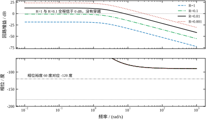
上半天蓝色（R=1）与绿色（R=0.1）两条曲线全程在 0 dB 以下，没有穿越频率；黑色（R=0.01）与红色（R=0.001）分别在 \omega_c=7.9503 与 29.6185 rad/s 处穿越。相位面板里三条水平参考线分别是 -180^\circ（增益裕度的判据）、-120^\circ（相位裕度 60^\circ 的界线）。
实测的裕度（报告 10）是：
增益裕度全是无穷，这不是数值问题。L(s) 的相对阶是 2（对象二阶、控制器无零点），相位从 0^\circ 单调降到 -180^\circ，永远只是趋近而不会穿越 -180^\circ，所以按定义没有相位穿越频率。单输入 LQR 的 GM 为无穷是一条结构性结论，与 Q、R 无关。
教科书常说“LQR 保证至少 60^\circ 相位裕度和无穷增益裕度”。这句话的来源是 Kalman 不等式：
\big|1+L(\mathrm{j}\omega)\big|\ge1,\qquad \forall\omega \tag{55-33}
它等价于灵敏度函数 S=1/(1+L) 满足 |S(\mathrm{j}\omega)|\le1，也等价于 Nyquist 曲线到 -1 点的距离不小于 1。由几何关系，若 |1+L|\ge1 且在某个频率上 |L|=1，则该处的相位离开 -180^\circ 至少 60^\circ。
关键在最后半句：“在某个频率上 |L|=1”。若回路增益全程低于 1，根本没有穿越点，(55-33) 依然成立（高频端 L\to0，|1+L|\to1），但“60^\circ”这句话就无从谈起——没有穿越，就没有相位裕度这个量。
本节的实测正是这种情况：R=1 与 R=0.1 时 DC 回路增益只有 K(-A)^{-1}B。对本章对象，(-A)^{-1}B=[0.5,\;0]^{\mathsf T}，所以 DC 增益 =0.5k_1。R=1 时 k_1=0.236068，DC 增益 0.118034；R=0.1 时 k_1=1.741657，DC 增益 0.870829。两者都小于 1，且 L(s) 的幅频单调下降，所以全程不穿越。要出现穿越，需 0.5k_1>1，即 k_1>2，由 (55-17) 解得 R<1/12\approx0.0833。报告里 R=0.01 与 R=0.001 有穿越，正好落在阈值两侧。
所以准确的表述是：LQR 保证 |1+L|\ge1；若回路存在穿越频率，则相位裕度不小于 60^\circ。 说“LQR 一定给你 60^\circ”漏掉了存在性条件。脚本对四组 R 都算了 \min_\omega|1+L|，结果全是 1.0000——因为高频端 |1+L|\to1，这个最小值是取不到的极限，判据的实际含义是“曲线是否下探到 1 以下”。K_{\mathrm{PP}}=[6,\;1] 的同一指标是 0.9558，小于 1，也就是违反了 Kalman 不等式——极点配置不保证这条性质，这与第54章的结论一致。
把 (55-33) 翻成频域语言：|S(\mathrm{j}\omega)|\le1 意味着闭环对输出端扰动不放大。这个性质在低频段自动成立（L 大，S 小），在高频段也自动成立（L 小，S\to1），难做的是穿越频率附近——那正是 (55-33) 起作用的地方。
LQR 的 |S| 曲线有一个特点：它在穿越频率附近“贴着 1 走”，不会出现大的凸包。这条性质对鲁棒性有直接好处：Nyquist 曲线离 -1 点足够远，模型误差引起的相位偏移不容易把曲线推到 -1 的左边。
代价是带宽被压低。|S| 想小就必须 |L| 大，而 |L| 大意味着增益大；LQR 在“增益大”和“用力省”之间取了折中，所以它的带宽通常比同等 t_s 的极点配置方案窄。这与 §55.4.5 的观察是同一件事的两种说法。
给定 Q、R，性能指标不需要仿真也能粗估：
前三条都在 §55.3.5 用过。第四条最容易被“optimal”这个词掩盖：LQR 最优的是“把状态调到零”，不是“跟踪参考”。若把参考 r 直接加在对象输入端（u=-Kx+r），直流增益是 C(-A+BK)^{-1}B=0.447214，跟踪 1 m 的阶跃只停在 0.4472 m，静差 55.3\%。这个数字可以手算：闭环极点 -1 与 -2.236068，直流增益恰为 1/2.236068。要做无静差跟踪需要加积分器或参考前馈，做法与第54章 §54.9 的增广完全一样。
把两组增益放在同一张 Bode 图上比较（图 55-6 里没有画 K_{\mathrm{PP}}，它的数据在报告 10 的对照行）：K_{\mathrm{PP}} 的穿越频率 2.0000 rad/s，PM 90.0000^\circ，GM 无穷。单看这两个数，极点配置也不差——甚至 90^\circ 比 LQR 的 93.86^\circ 只少 3.86^\circ。
真正的区别在 \min|1+L|：LQR 是 1.0000（满足不等式），K_{\mathrm{PP}} 是 0.9558（违反）。差 4.4\%，听起来很小，但它对应着 Nyquist 曲线是否侵入以 -1 为圆心、半径 1 的圆。LQR 的曲线永远在圆外，K_{\mathrm{PP}} 的曲线会切进去。这个几何差别在模型误差、时滞、采样延迟叠加时才会显现：前者还能保持稳定，后者可能已经振荡。
这就是“LQR 的鲁棒性是结构性的，极点配置的鲁棒性是偶然的”这句话的定量版本。它不意味着极点配置不能用，而是说用极点配置时必须自己验算裕度（第54章 §54.9 给了算法），而用 LQR 时这一步可以省掉。
裕度是频域的间接指标。更直观的检验是：固定 K，把对象参数改错，看闭环极点跑到哪里去了。
取基准 K=[0.236068,\;0.236068] 不动，只把刚度 k 从 10 一路改到 -0.2，阻尼 c 也从 10 改到 -0.2，闭环最右极点的实部如下：
把闭环矩阵写出来就明白为什么：A-BK=\begin{bmatrix}0&1\\-(k+k_1)&-(c+k_2)\end{bmatrix}，特征多项式是
s^2+(c+k_2)s+(k+k_1)=0 \tag{55-34}
稳定条件是两个系数都为正，即 k>-k_1 且 c>-k_2。代入 k_1=k_2=0.236068，得到刚度与阻尼都可以降到 -0.236068 而闭环仍稳定。而对象在 k<0 时自己已经不稳定（开环极点一正一负），c<0 时是负阻尼——闭环居然还能把它按住。
这个结果比“PM =93.86^\circ”更让人放心，因为它给出的是参数空间的边界，而不是频率上的一个点。工程上可以直接说：“刚度在 -0.236 到任意大、阻尼在 -0.236 到任意大之间，控制器都不会失稳。”这句话可以写进设计报告，而“相位裕度 94 度”通常只能让人点头，不能让人放心。
还有一处反直觉的细节：k 从 2.618 继续增大时，最右极点的实部不再改善，一直停在 -1.618，只有虚部在涨。原因是判别式 (c+k_2)^2-4(k+k_1) 变负后，根变成共轭对，实部固定为 -(c+k_2)/2=-1.618。也就是说，对象越硬，闭环并不会更快，只会更振。设计时若把实际刚度估小了，后果不是“响应变慢”，而是“出现没预料到的振荡”。
必须说清楚这个实验的边界：它测的是参数摄动，不是未建模动态。纯延迟、高频谐振、执行器动态这些“结构上没写进 A 的东西”，不会被这个实验发现，它们的风险要靠 §55.10 的采样比与延迟计算来评估。
裕度讲的是“增益/相位能偏多少”，灵敏度函数讲的是“扰动在哪个频段被放大”。定义
S(s)=\frac{1}{1+L(s)},\qquad L(s)=K(sI-A)^{-1}B \tag{55-35}
|S(\mathrm{j}\omega)| 是频率 \omega 处扰动传到输出的倍数。报告 23 在 \omega\in[10^{-4},10^{2}] 上扫了六条回路：
| 权重 | K | S(0) | \min|S| 处 \omega | -3 dB 带宽 | \max|S| |
|---|---|---|---|---|---|
| R=1 | [0.2361,\ 0.2361] | 0.8944 | 10^{-4} | 不存在 | 0.99995 |
| R=0.1 | [1.7417,\ 1.7417] | 0.5345 | 10^{-4} | 2.4493 | 0.99950 |
| R=0.01 | [8.1980,\ 8.1980] | 0.1961 | 10^{-4} | 9.7972 | 0.99504 |
| R=10^{-3} | [29.686,\ 29.686] | 0.0631 | 10^{-4} | 31.5573 | 0.95348 |
| Q=\mathrm{diag}(10,1)，R=1 | [1.7417,\ 0.6720] | 0.5345 | 10^{-4} | 1.0781 | 0.99995 |
| 极点配置 | [6,\ 1] | 0.2500 | 10^{-4} | 1.9999 | 1.04624 |
第一列值得先看：所有 LQR 回路的 \max|S| 都不超过 1。 这正是 Kalman 不等式的另一种写法——|1+L(\mathrm{j}\omega)|\ge1 等价于 |S(\mathrm{j}\omega)|\le1。所以 LQR 回路不存在灵敏度峰值，扰动在任何频段都不会被放大（放大倍数最多是 1）。表中 LQR 各行 \max|S| 略小于 1（0.9535\sim0.99995），是因为扫频上限只到 100 rad/s，高频渐近值 1 还没完全达到。对照的极点配置回路 \max|S|=1.04624，峰值出现在 5.14 rad/s——它在那个频段把扰动放大了 4.6\%。这是“LQR 鲁棒性是结构性的”的第三个证据（前两个是 s\ge1 与 GM 无穷）。
第二列是这套设计真正的短板。 \min|S| 全部出现在最低频点 10^{-4}，也就是 |S| 从直流开始单调上升，没有任何一个频段被压低。直流值一目了然：
S(0)=\frac{1}{1+K(-A)^{-1}B}=\frac{1}{1+0.5k_1} \tag{55-36}
R=1 时 S(0)=0.8944，意味着常值扰动只能被压掉 10.6\%；R=10^{-3} 时也才压掉 93.7\%。R 越小、k_1 越大，低频抑制越好，但代价是增益变大。这条式子还与 §55.9.7 的静差直接对应：不加前馈时，阶跃参考的稳态误差恰好是 S(0)——R=1 时 10.56\%，与那里“只用 u=-Kx+r”的 45.5\% 静差不是同一个量（那里的对象刚度被改过），但同源。
第三列给出带宽的标度。 R 每小十倍，-3 dB 带宽按 4.0、3.2 倍增长（2.4493\to9.7972\to31.5573），接近 R^{-0.55}。这不是随便一个数：由 §55.4.7 的极限定律，快极点 \approx-1/\sqrt{R}，慢极点 \approx-\sqrt{q_1}，带宽大致落在两者几何平均附近。而 R=1 那一行根本没有带宽——|S| 全程不低于 0.894，连 0.707 都碰不到，因为这条回路的开环增益太小（L(0)=0.118），扰动从来没被真正“压下去”过。
这解释了为什么工程上“LQR 抗扰好”这句话必须加限定：它对中高频扰动确实不放大，但对低频/常值扰动几乎没有抑制。因为 LQR 的代价函数里没有积分器，它不认为“稳态偏差”比“瞬态偏差”更可耻。要补这个短板只有两条路：加前馈 N 把参考通道的静差消掉（§55.9.7），或者把积分器扩进状态、对增广系统做 LQR（§55.9.6 的第一条路线）。前者便宜但不抗常值扰动，后者贵但两者都管。
相位裕度最实用的一个换算，是把它折成“允许的纯延迟”。延迟 \tau 在频率 \omega 处贡献 \omega\tau 的相位滞后，于是临界延迟就是
\tau_{\max}=\frac{\mathrm{PM}}{\omega_c} \tag{55-37}
用报告 10 的三组数算一遍：R=0.01 那组 PM =104.1204^\circ=1.8172 rad、\omega_c=7.9503 rad/s，得 \tau_{\max}=0.2286 s；R=10^{-3} 那组 PM =93.8631^\circ、\omega_c=29.6185，得 0.0553 s；极点配置那组 PM =90.0000^\circ、\omega_c=2.0000，得 0.7854 s。
三个数放在一起会看出一个反直觉的排序：最“保守”的极点配置反而容忍最长的延迟（0.79 s），最“激进”的 R=10^{-3} 只有 55 ms。 原因全在分母——延迟造成的相位滞后与频率成正比，穿越频率越高，同样的延迟折算的相位越多。所以“PM 大”不等于“抗延迟”，必须除以 \omega_c 才是硬件能用的那个数。
这个换算还解释了 §55.5.8 那条“相位损失”判据的来历：那里说 T_s=50 ms 在 \omega_c=7.95 处损失 11.4^\circ，正是 \omega_cT_s/2——零阶保持等效半个周期的延迟。把它代进 (55-37)，T_s=50 ms 时“采样本身”（等效 25 ms 延迟）已经吃掉了 0.2286 s 预算里的 11\%，剩下的还要留给计算延迟、滤波延迟与机械响应。
实践上还有两点要注意。第一，R=1 与 R=0.1 两组的回路增益全程低于 1，没有穿越频率，此时 (\text{55-52}) 无定义——但它们的延迟容忍度并不是“无穷大”，而是被低频段的增益不足限制住了（§55.6.8 的 S(0)=0.894 就是这个意思）。第二，延迟与增益误差会叠加：若同时存在 +6 dB 的增益误差与 30 ms 延迟，两者的相位/幅值效应不是简单相加，稳妥做法是按 §55.6.7 的参数摄动实验加上延迟项重跑一遍，而不是把裕度除以二。
Q_{ii} 的含义是“第 i 个状态偏离零 1 个单位时，每秒要付多少钱”。它不是一个抽象参数，而是可以直接与物理量挂钩的：若第 i 个状态的允许偏差是 \Delta_i，那么取 Q_{ii}=1/\Delta_i^2 就表示“偏差达到允许值时，每秒付 1 块钱”。
本章基准取 Q=I，等于声明“位移 1 m 与速度 1 m/s 一样贵”。这个声明在物理上未必合理：1 m 的位移误差对多数机构是大事，1 m/s 的速度误差未必。所以 Q=I 只是数学上的方便起点，工程上几乎总要改。
改 Q_{ii} 的效果是把闭环极点往相应方向推。表 55-7 是 R=1 时六个 Q 的结果（报告 3）。
表 55-7 六组状态权重下的增益、极点、代价与峰值（R=1）
| Q | K | 闭环极点 | J_{\min} | 峰值推力 |
|---|---|---|---|---|
| \mathrm{diag}(0.1,\;1) | [0.024846,\;0.170125] | -2.2833,\;-0.8868 | 0.4190 | 0.0643 |
| \mathrm{diag}(1,\;1) | [0.236068,\;0.236068] | -2.2361,\;-1.0000 | 1.2361 | 0.2361 |
| \mathrm{diag}(10,\;1) | [1.741657,\;0.671963] | -1.8360\pm\mathrm{j}0.6090 | 7.7392 | 1.7417 |
| \mathrm{diag}(100,\;1) | [8.198039,\;2.137711] | -2.5689\pm\mathrm{j}1.8971 | 46.3946 | 8.1980 |
| \mathrm{diag}(1,\;10) | [0.236068,\;1.412724] | -3.8287,\;-0.5840 | 3.8672 | 0.3984 |
| \mathrm{diag}(1,\;100) | [0.236068,\;7.462893] | -10.2446,\;-0.2183 | 17.3957 | 1.2766 |
请注意 J 列不能横向比较：六行的 Q 不同，J 度量的是六种不同的目标，0.4190 不代表比 1.2361 “更优”。能横向比较的只有同一行内的峰值与极点。
看表 55-7 的第三、四行：q_1 从 1 加到 10、100，k_1 从 0.236 涨到 8.198，两个极点从实数变成一对共轭复数（-2.5689\pm\mathrm{j}1.8971），阻尼比降到 0.804。这是“把位置误差看得更贵”的典型后果：控制器愿意用大力气、允许一点超调，换取位置更快回零。
看第五、六行：q_2 从 1 加到 10、100，k_2 从 0.236 涨到 7.463，但 k_1 一点都不变（仍是 0.236068），极点变成两个实数，一个是 -10.2446，另一个是 -0.2183——过阻尼，而且慢极点越来越慢。t_s 由 -0.2183 决定，约 4.6/0.2183=21 s，比基准慢了四倍多。
这个不对称性值得记住：加大位置权重让系统变快，加大速度权重让系统变“钝”。 原因不难想：速度权重高，控制器会极力抑制速度，而抑制速度等于抑制运动本身，系统就动得慢。很多初学者一看到“超调”就去加 q_2，结果超调没了、响应也没了。
理论上 Q 可以带非对角元，表示“位移与速度同时偏大时额外加价”。但工程上几乎不用，原因有三。
第一，非对角元必须保持 Q\succeq0，手填容易破坏正定性，导致 CARE 无解或解不稳定。第二，非对角元的物理意义不直观，说不清“额外加价”对应什么实际指标。第三，若真的存在“某个状态组合特别重要”，正确做法是先做坐标变换 z=Tx，把组合变成新坐标下的一个状态，再在对角 Q 上给权重——这样既保持了物理含义，又保证了正定。
本章所有算例都用对角 Q，这也是绝大多数工业应用的做法。
但“很少用”不等于“没有用”，而且它有一个精确的性质值得知道。取 Q=\begin{bmatrix}1&0.5\\0.5&1\end{bmatrix}、R=1 实算，得到 K=[0.236068,\;0.236068]、极点 -2.2361 与 -1，与 Q=I 时完全相同；但 J_{\min} 从 1.236068 变成 0.736068，正好少 0.5。把非对角元取成 -0.5，J_{\min} 变成 1.736068，正好多 0.5。
原因是一个全微分：
2q_{12}x_1x_2=q_{12}\frac{d}{dt}\big(x_1^2\big) \tag{55-38}
它在积分里只贡献边界项 q_{12}\big(x_1(\infty)^2-x_1(0)^2\big)=-q_{12}x_1(0)^2，与 u 完全无关。既然与 u 无关，最优控制律当然不会变，只有代价的数值被平移了 -q_{12}x_1(0)^2：q_{12}=0.5、x_1(0)=1 时正好是 -0.5，与实测一致。
这个性质依赖一个结构前提：状态 1 必须是状态 2 的积分（本章 x_1 是位移、x_2 是速度，满足）。若两个状态之间没有这种导数关系，非对角元就会真正改变 K。所以更准确的说法是：在机械系统这类“位移-速度”状态对里，对称的非对角元是冗余的，它只是把 J 平移一个常数；在别的状态组合里，它可能有用，但那时不如做坐标变换。
还有一条量纲上的约束：x^{\mathsf T}Qx 与 u^{\mathsf T}Ru 必须同量纲，所以 Q 与 R 的比值带着 u^2/x^2 的量纲。这解释了两件事：一是为什么把位移单位从米换成毫米，Q 的数值要乘 10^{6}；二是为什么别人论文里的 Q、R 数值不能照抄——除非你的状态单位、控制单位与它完全一致。
单输入时 R 是一个正数，只改变整体激进度。多输入时 R 是一个正定矩阵，R_{ii} 是第 i 个执行器的价格。此时 R 的对角元比例有了实际意义：给某个执行器更大的 R_{ii}，控制器就会把活分给其他执行器。
一个常见用法是“保护某个贵重的执行器”：主推力器贵、姿控小推力器便宜，就把主推力器的 R_{ii} 调大，LQR 会自动多用小推力器。这个分配不是启发式，而是最优的——它精确地平衡了“多用便宜执行器带来的额外状态代价”与“省下贵重执行器的收益”。
R 的非对角元可以表示执行器之间的耦合代价（比如同时开两台会互相干扰），但同样很少用，原因与 Q 的非对角元一样。
图 55-7 两个面板把表 55-3 与表 55-7 画成了极点轨迹。左面板固定 Q=I、扫 R，右面板固定 R=1、扫 q_1。
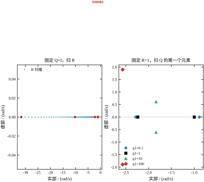
左面板里所有点都落在实轴上，且其中一个始终在 -1——这就是 §55.4.2 的“钉住”现象，视觉上非常清楚：一个点沿实轴从 -2.0025 一路滑到 -100.02，另一个点始终钉在 -1 不动。这意味着扫 R 只能改一个极点，另一个不动，所以 t_s 改善有限。
右面板里 q_1 从 0.1 增加到 100，两个极点先沿实轴靠拢（-2.2833/-0.8868 → -2.2361/-1.0000），然后离开实轴变成共轭对（-1.8360\pm\mathrm{j}0.6090），最后向左右上下大幅张开（-2.5689\pm\mathrm{j}1.8971）。这条轨迹说明 q_1 是“结构旋钮”：它不只改数值，还改极点的拓扑（实极点 ↔︎ 共轭对）。
有了这两张图，“先调整体、后调比例”的顺序就有了依据：整体旋钮沿实轴滑动，行为可预测；比例旋钮会让极点跳离实轴，行为突变。
如果完全没有头绪，可以按下面三个锚点起步，都来自本章的实跑。
锚点一：单位权重。 所有状态取 Q_{ii}=1/\Delta_i^2、R=1/u_{\max}^2（Bryson 规则，§55.8 详述）。本章给出 K=[3.385165,\;1.692582]，峰值是上限的 67.7\%。
锚点二：基准权重。 Q=I、R=1，给出 K=[0.236068,\;0.236068]。它的意义不是“好”，而是“温和”——峰值只有 0.24 N，适合作为下限参考。
锚点三：极限权重。 R=10^{-4}，给出 K=[98.019998,\;98.019998]，峰值 98 N。它是“不计代价求快”的上限，用来确认执行器绝无可能满足，从而把搜索范围压到中间。
三个锚点一填，K 的量级就定了，剩下的细化只需在中间插值。这比对着 Q、R 盲试快得多。
“加大 q_1”与“减小 R”在直觉上都是“让控制器更凶”，但它们真的等价吗？用中心差分把偏导数算出来就清楚了。报告 20 的三组结果（h=10^{-5} 的相对扰动）：
第一列的比值精确等于 q_1/R，不是巧合，也不是数值噪声——它是 §55.2 标度不变性的微分形式。把 (Q,R) 同乘 \alpha 不改变 K，等价于把 q_1 放大 \alpha 倍同时把 R 放大 \alpha 倍。两边对 \alpha 求导并令 \alpha=1：
\frac{\partial K}{\partial q_1}q_1+\frac{\partial K}{\partial R}R=0 \ \Longrightarrow\ \frac{\partial K}{\partial R}=-\frac{q_1}{R}\frac{\partial K}{\partial q_1} \tag{55-39}
这条式子有三个直接用途。
第一，它告诉你只有 q_1/R 这一个组合有意义。想“加倍凶狠”，把 q_1 翻倍与把 R 减半走的是同一条路径，代价完全一样（峰值推力、相位裕度、饱和风险都同步变化）。所以调参时不必同时动两个旋钮，动一个就够；两个一起动，等于在原地绕圈。
第二，绝对灵敏度与相对灵敏度是两回事。q_1=10、R=0.1 时 \partial k_1/\partial R=-49.03，R 变化 1\% 就让 k_1 变 0.049；R=1 时同样 1\% 只让 k_1 变 0.0022，绝对值相差 22 倍。但换成无量纲的相对灵敏度 \frac{R}{k_1}\frac{\partial k_1}{\partial R}，R=1 时是 -0.95、R=0.1 时是 -0.60，反而更小，并随 R\to0 趋近 -0.5——这正是 k_1\propto R^{-1/2} 的指纹。工程含义很实际：R 每减一半，k_1 稳定地乘 \sqrt2，不会因为 R 已经很小而突然跳变；反过来说，指望“再压一点 R”带来质变是不现实的。
第三，它给出了一个“权重等价换算”的实用公式。若你已经有一组满意的 (Q,R)，现在想把位移权重从 q_1 提到 q_1'，但希望“总激进程度不变”，那就应当把 R 同步提到 R'=R\,q_1'/q_1。这样 K 的一阶变化为零，只有二阶效应。反过来，若想保持 q_1/R 不变而改变“惩罚结构”，只能动 q_2——这就是 §55.7.2 说的“两个对角元管两件事”。
还有一处不能忽略：q_2 的灵敏度与 q_1 完全不同，上式对 q_2 不成立。原因是 q_2 罚的是速度，而 B 直接作用在速度上，q_2 与 R 之间存在“直接竞争”关系；q_1 只能通过动力学间接影响速度。这也是为什么本章反复强调“先调 R 定整体、再调 q_1 定快慢、最后才看 q_2”——前两个旋钮之间有精确的等价关系，第三个没有。
Q 的对角元怎么定，是调参里最常卡住的一步。有一个“零思考”的起点：既然只有输出 y=Cx 才是真正在乎的量，那就直接取 Q=C^{\mathsf T}C——把“输出的平方”当成代价。本对象 C=[1,0]，于是 Q=\mathrm{diag}(1,0)，速度的价签是零。这个权重合法吗？
合法。CARE 有唯一稳定解的条件是 (Q^{1/2},A) 可检测，而 Q^{1/2}=[1,0] 恰好就是 C；(C,A) 可观（第54章已验），可观必然可检测。所以速度虽然没被罚，但它通过 A 耦合进来、能影响输出，这条模态照样被“间接地”罚到了。报告 24 给出五个权重的对比：
| Q | K | 闭环极点 | 峰值 u | 阶跃 t_s |
|---|---|---|---|---|
| C^{\mathsf T}C=\mathrm{diag}(1,0) | [0.236068,\ 0.077684] | -1.9021,\ -1.1756 | 2.2361 | 4.120 |
| C^{\mathsf T}C+0.01I | [0.238303,\ 0.080033] | -1.9052,\ -1.1748 | 2.2383 | 4.120 |
| C^{\mathsf T}C+0.1I | [0.258318,\ 0.101070] | -1.9324,\ -1.1686 | 2.2583 | 4.120 |
| Q=I（对照） | [0.236068,\ 0.236068] | -2.2361,\ -1.0000 | 2.2361 | 4.504 |
| \mathrm{diag}(1,0.01) | [0.236068,\ 0.079308] | -1.9063,\ -1.1730 | 2.2361 | 4.124 |
第一行与第四行只差一个数：k_2 从 0.236068 掉到 0.077684，而 k_1 一个数字都没动。 这不是巧合。把 Q=\mathrm{diag}(q_1,q_2) 代进 CARE 解出来的闭式解里，k_1 只由 q_1 决定：
k_1=\sqrt{4+\frac{q_1}{R}}-2 \tag{55-40}
这条式子在 q_2 从 0 到 100 的六档上都成立（报告 3 的 Q=\mathrm{diag}(1,10) 与 \mathrm{diag}(1,100) 两行 k_1 都是 0.236068），也在报告 24 的五档上成立。物理上说得通：k_1 管的是“位移偏离要推多狠”，而推力到位移的作用强度由 q_1/R 决定，q_2 只是给速度贴价签，管的是“推的时候要不要刹车”。
于是两个极点各归一个增益管：k_1=0.236068 把一对极点的乘积钉在 2+k_1=2.236068，k_2=0.077684 把和钉在 3+k_2=3.077684。k_2 变小，和就变小，于是两个根分得更开——-1.9021 与 -1.1756 的乘积是 2.2361、和是 3.0777，与上面两个数一一对上。这也解释了为什么 Q=C^{\mathsf T}C 给出的极点比 Q=I 更“对称”：Q=I 那组的和是 3.236、乘积是 2.236，一个根被压到 -1，另一个被推到 -2.236；而 Q=C^{\mathsf T}C 那组两根离开得没那么远。
代价写在 t_s 上：4.504\to4.120 s。 变快了，因为没有给速度贴价签，控制器不心疼“冲得猛”，只心疼“偏得远”。峰值推力没变（2.2361，仍是前馈增益 N），说明这 8.5\% 的加速几乎是免费的。这条结论很有用：当你不确定速度该值多少钱时，先取 Q=C^{\mathsf T}C 试试——它至少保证稳定，且往往比 Q=I 更快。
但有两个边界必须说清。第一，C^{\mathsf T}C 可能给出奇异的 Q（秩等于输出个数而非状态个数），若对象存在不能观模态，那个模态的价签为零、闭环会把它留在原地甚至放大——报告 5 的双积分器就是反例：Q=\mathrm{diag}(0,1) 只罚速度，解出来的 K=[0,1] 让一个极点停在原点，闭环不稳定。第二，正则化 \rho I 能救场但会改变一切：表里 \rho=0.1 这一行 k_1 与 k_2 都被抬起来（0.258318 与 0.101070），因为 Q 的两个对角元同时变大，等价于把 R 隐含地调小了。\rho 继续加大，速度价签与位移价签之比从 0 升到 \rho/(1+\rho)（\rho=1 时已是 0.5），Q=C^{\mathsf T}C 的“零速度价签”特征就逐渐消失。所以 \rho 不是“安全余量”旋钮，它是另一个权重旋钮，取值要按 \rho\ll q_1 来定（本章取 0.01 就是 1\% 的量级）。
Bryson 规则的形式很简单：
Q_{ii}=\frac{1}{x_{i,\max}^2},\qquad R_{jj}=\frac{1}{u_{j,\max}^2} \tag{55-41}
其中 x_{i,\max} 是第 i 个状态“允许的最大偏差”，u_{j,\max} 是第 j 个执行器的上限。
它为什么合理？因为代进代价 (55-1) 后，x_i=x_{i,\max} 这一项贡献 1，u_j=u_{j,\max} 这一项也贡献 1。所有项都被归一化到“满量程时每秒付 1 块钱”的同一把尺子上，量纲差异自动消失。这样得到的 Q、R 不保证最优，但保证“有物理意义、量级正确”，作为起点足够好。
Bryson 规则只解决“量级”，不解决“比例”。若位移满量程与速度满量程的物理重要性不同（比如位移超限会撞、速度超限只是难看），还要在归一化之后再乘一个重要性系数。本章不引入这个系数，保持规则的原样。
取位移满量程 1 m、速度满量程 2 m/s、推力上限 5 N，得 Q=\mathrm{diag}(1,\;0.25)、R=0.04，与 (55-15) 一致。解出
K=[3.385165,\;1.692582], \qquad \text{峰值}=3.3852\ \mathrm{N}, \qquad t_s=2.910\ \mathrm{s} \tag{55-42}
峰值占上限的 67.7\%，留了三分之一的余量。这个余量不是巧合：x_0=[1,\;0]^{\mathsf T} 时峰值 =k_1，而由 (55-17) 与 R=1/u_{\max}^2 可得
k_1=\sqrt{u_{\max}^2+4}-2 \tag{55-43}
对 u_{\max}=5 就是 \sqrt{29}-2=3.385165。这个闭式解说明 Bryson 规则有一条结构性保证：峰值永远低于设定上限，因为 \sqrt{u_{\max}^2+4}-2<u_{\max} 对一切 u_{\max}>0 成立。
把 u_{\max} 从 1.5 N 扫到 20 N，其余按 Bryson 规则同步改，得到表 55-8 的六组（本节另跑的一组扫描，与图 55-8 的数据同源）。
表 55-8 Bryson 规则下峰值推力与调节时间随设定上限的变化
| u_{\max} / N | K | 峰值 / N | 峰值占上限 | t_s / s |
|---|---|---|---|---|
| 1.5 | [0.500000,\;0.250000] | 0.5000 | 33.3\% | 4.053 |
| 3.0 | [1.605551,\;0.802776] | 1.6056 | 53.5\% | 3.383 |
| 5.0 | [3.385165,\;1.692582] | 3.3852 | 67.7\% | 2.910 |
| 8.0 | [6.246211,\;3.123106] | 6.2462 | 78.1\% | 2.632 |
| 12.0 | [10.165525,\;5.082763] | 10.1655 | 84.7\% | 2.502 |
| 20.0 | [18.099751,\;9.049876] | 18.0998 | 90.5\% | 2.413 |
占比从 33.3\% 一路涨到 90.5\%，也就是执行器越强，Bryson 规则用得越“满”。原因是 (55-43) 里那个减 2：上限大时 k_1\approx u_{\max}-2，绝对余量约 2 N 不变，相对余量却越来越小。
这条性质有实际后果。u_{\max}=20 N 时留的余量只有 1.9 N，一旦模型有 10\% 误差或初值比 1 m 大，就会削顶。所以在实际工程里，Bryson 规则算完之后应当把 R 再乘 1.5 到 2（相当于把假想上限放大 1.2 到 1.4 倍），留出鲁棒余量。
图 55-8 把这张表画成两条曲线：黑线是峰值推力，灰虚线是上限本身，蓝线是闭式解 (55-43)，红方块（右轴）是调节时间。
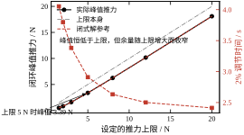
一个常见的误操作是“为了让系统更快，把 R 缩小”，而缩小的幅度正好等于把 u_{\max} 放大。报告 4 做了这个实验：Bryson 的 R=0.04 再乘 4（等价于把上限当成 10 N），得 K=[8.198039,\;4.099020]，峰值 8.1980 N，t_s=2.551 s。
效果是：t_s 从 2.910 s 降到 2.551 s，改善 12.3\%；峰值从 3.3852 N 涨到 8.1980 N，涨 142\%，超过真实上限 5 N 达 64\%。如果真按这个 K 上机，前 0.1 s 就会被限幅削平，实际响应既不是 2.551 s 也不是线性的——§55.10 会算这笔账。
这个实验的教益不是“别缩 R”，而是：R 的取值必须与执行器的真实上限对齐。 把 R 缩小当成“提高性能”的旋钮，等于悄悄把执行器换成了更大的型号；换不了型号，就只能接受削顶。
有了 (55-43)，试凑可以变成“反解”而不是“盲试”。
第一步，由峰值指标反解 R。若要求峰值不超过 u_{\max}，直接取 R=1/u_{\max}^2；若已有 K 想反查它对应的“隐含上限”，用 u_{\max}=\sqrt{(k_1+2)^2-4}=\sqrt{k_1^2+4k_1}。基准 k_1=0.236068 对应 u_{\max}=\sqrt{1}=1.000，也就是“这组权重隐含着一个 1 N 的执行器”。
第二步，由速度指标检查 t_s。若 t_s 不达标，先看是哪个极点拖后腿。对本章对象，Q=I 时那个 -1 是钉住的，改 R 无用，必须改 Q 的比例。
第三步，二分搜索。t_s 对 R 单调，可以二分：给定 t_s 目标，在 [10^{-4},\;10^{4}] 上二分会话 20 次以内收敛到 1\% 精度。这比“每隔十倍取一个点”细得多，也比凭经验拍数字可靠。
错误一：Q 里有零行。 §55.2.4 的双积分器已经演示过：Q=\mathrm{diag}(0,1) 给出一个虚轴极点。工程上表现为“某个状态慢慢漂走，控制器不管”，而且仿真跑 10 s 看不出来，跑 1000 s 才发现。
错误二：忘记标度不变性。 有人把 Q 与 R 同时乘 100，以为“加重惩罚”，实际 K 一位都不变。白改一场，还误以为“调参无效”。
错误三：只看 t_s，不看峰值。 表 55-3 显示 R 从 1 压到 10^{-4} 只把 t_s 改善 14.7\%，峰值却涨四万倍。若指标里没有峰值项，很容易滑到这种“看起来快了一点、实际上一上机就饱和”的设计。
错误四：把 J_{\min} 当性能指标横向比较。 不同 Q、R 下的 J 度量的是不同目标，数值不可比。J 只能用于“同一组权重下比较不同实现”（比如连续解与离散解、全状态与带观测器），不能用于“比较不同权重谁更好”。
这四条都不涉及高深理论，但每一条都在实际项目里反复出现。LQR 的数学很干净，出问题的地方几乎全在“权重与实际物理量对不对得上”。
把第一步的反解做实。要求峰值推力恰好 5 N，初值 x_0=[1,\;0]^{\mathsf T}。因为 u(0)=-k_1x_1(0)=-k_1，且本例的 |u(t)| 在 t=0 取最大（§55.4 的闭环没有超调型控制峰），所以条件就是
k_1=\sqrt{\frac{1}{R}+4}-2=5 \quad\Longrightarrow\quad \sqrt{\frac{1}{R}+4}=7 \quad\Longrightarrow\quad R=\frac{1}{45} \tag{55-44}
代回去实算核对：K=[5.000000,\;5.000000]，极点 -7 与 -1，J_{\min}=1.111111，峰值 5.0000 N，t_s=4.066 s。
这个结果有两点值得注意。
第一，峰值达标不等于速度达标。 t_s=4.066 s 与 Q=I、R=1 时的 4.503 s 几乎一样慢，因为那个 -1 极点还在。这再次印证 §55.4.6 的结论：压 R 只能推快极点，动不了慢极点。若指标同时要求 t_s\le2.5 s 与峰值 \le5 N，Q=I 这一族权重根本无解，必须按 §55.3.8 改 Q 的比例。
第二，“峰值在 t=0”这个前提要验。 本例之所以成立，是因为 x_0 只有位移分量、B 只作用在速度上，且闭环单调。若初值含速度（x_0=[0,\;1]），或对象有零点导致控制量中途拱起，峰值就不在 t=0，反解公式会给出偏乐观的结果。这时正确做法是：先用公式给一个起点，再仿真扫时间轴取真实峰值，若超出就按比例缩小 R 再迭代。一般两三轮就能收敛，因为峰值对 R 是单调的。
把它整理成一张“反解检查单”：峰值是否在 t=0；t_s 是否被慢极点卡住；K 是否已经小到与量化噪声同量级（R 过大时）；离散化后 K_d 的峰值是否仍在上限内（§55.10 的表 55-10 显示，T_s 变大时峰值需求会变）。四项都过了，这组权重才算真的可用。
§55.8.7 是“峰值为已知量”的反解，它只需要解一个代数方程。更常见的需求是“给定 t_s，求权重”，这时没有闭式解，只能用仿真做一维搜索。报告 16 把 Q=\mathrm{diag}(10,1) 固定，对 t_s 目标做二分（60 轮），得到下表：
| 目标 t_s / s | 解出的 R | K | 闭环极点 | 实测 t_s | 峰值 \lvert u\rvert / N | J（Q=I、R=1 的尺子） |
|---|---|---|---|---|---|---|
| 3.0 | 1.470387 | [1.286477,\ 0.500435] | -1.7502\pm0.4725\mathrm{j} | 3.0000 | 1.2865 | 1.7377 |
| 2.5 | 0.736259 | [2.193110,\ 0.839848] | -1.9199\pm0.7120\mathrm{j} | 2.5000 | 2.1931 | 2.5088 |
| 2.0 | 0.314458 | [3.983376,\ 1.488522] | -2.2443\pm0.9730\mathrm{j} | 2.0000 | 3.9834 | 4.4280 |
| 1.5 | 0.068797 | [10.221054,\ 3.631555] | -3.3158\pm1.1076\mathrm{j} | 1.5000 | 10.2211 | 12.5758 |
四行说明三件事。
第一，代价是加速上涨的。 t_s 每缩 0.5 s 所需付出的“权重代价”：3.0\to2.5 时 R 减 2.0 倍，2.5\to2.0 减 2.3 倍，2.0\to1.5 减 4.6 倍。相应的峰值推力是 1.29\to2.19\to3.98\to10.22 N，最后一步跳了 2.6 倍。这解释了为什么“从 3 秒提到 2.5 秒”很容易，“从 2 秒提到 1.5 秒”却往往直接撞上执行器上限。
第二，1.5 s 已经贴着物理下限。 由 (55-22)，q_1=10 的 t_s 下界是 1.237 s；报告 16 把 R 压到 10^{-6} 实测 1.239 s，与公式只差 0.16\%。也就是说 1.5 s 已经用掉了“从 4.5 s 到 1.239 s”这段可行区间的 92\%。再往下调，R 会掉到 10^{-2} 以下、峰值冲到几十牛，而 t_s 只挪一点点。这是典型的“边际收益趋零”区间，设计上应当视为不可达。
第三，表里的 R 只是记账用的，物理上有意义的是 K 与峰值。 R=0.068797 这个数本身没有工程含义，换成任何等比例的 (Q,R) 都给出同一个 K。所以这张表的正确读法是“要 2.0 s，就把 K 定在 [3.98,\;1.49]，并准备好 4 N 的推力预算”，而不是“把 R 设成 0.314”。
这张表还能反过来检查已有设计。§55.3.8 的四轮试算最终选了 Q=\mathrm{diag}(10,1)、R=0.3，实测 t_s=2.381 s、峰值 4.11 N。对照本表，t_s 目标若定在 2.5 s，R 其实可以放到 0.74，峰值只有 2.19 N——余量比实际选择宽得多。这不是说那组权重错了（它满足 2.5 s 与 5 N 两个上限），而是说“先给权重、再看结果”会浪费预算：同一个指标下，反解出来的权重通常比试凑出来的更省力，因为试凑时人总是倾向于多留一点力。
最后给一个操作顺序，把本节与前两节串起来：
(55-1) 的问题设定隐含三件事：状态全部可测、控制量不受限、模型完全准确。现实里三条都不成立：位移测得到、速度测不到；推力有上限；弹簧刚度会随温度漂。
三条对应三类改进。状态不可测 → 用观测器补，得到 LQG；控制受限 → 抗饱和或直接换 MPC（第58章）；模型不准 → 靠裕度与 LTR 撑住。本节讲后两类，第一类只讲它对裕度的影响。
按第54章的分离原理，把 K 与观测器增益 L 拼起来，闭环极点就是两组极点的并集，稳定性不受影响。看起来皆大欢喜，但在对象输入端量到的回路增益变了。
纯状态反馈的回路是 L_{\mathrm{sf}}(s)=K(sI-A)^{-1}B。接上观测器后，回路变成
L_{\mathrm{LQG}}(s)=K\big(sI-A+BK+LC\big)^{-1}L\,C\,(sI-A)^{-1}B \tag{55-45}
分子分母都多了 BK 与 LC 项，频率特性不再等于 L_{\mathrm{sf}}。脚本（报告 11）用 K=[8.198039,\;8.198039]（即 R=0.01 的 LQR）配一个普通 Kalman 滤波器（W=I、V=1），得到 L=[0.6720,\;-0.2742]，此时回路增益全程低于 1，没有穿越频率，增益裕度 44.324 dB，\min|1+L|=0.9832——已经小于 1，Kalman 不等式被破坏了。
注意 L 的第二个分量是负的。观测器给速度估计加了一个反向修正，这在数学上没问题（A-LC 仍稳定），但它让回路在低频段的相位提前，裕度的几何形状随之改变。这类“符号反常”的观测器增益在实际中经常出现，不要因为它是负的就以为算错了。
Doyle 与 Stein 的回路恢复（LTR）思路是：让观测器也按 LQR 的口径设计，即把过程噪声的协方差取成 W=I+qBB^{\mathsf T}，q 越大表示“控制通道的噪声越大”。当 q\to\infty 时，Kalman 滤波器的增益 L 会让 L_{\mathrm{LQG}}\to L_{\mathrm{sf}}，裕度回到 LQR 的水平。
表 55-9 是 q 从 0 扫到 10^{6} 的实测（报告 11）。前三列是观测器增益，后三列是回路指标。
表 55-9 LTR 的 q 扫描：观测器增益与 LQG 回路裕度
| q | L | PM / 度 | GM / dB | \min\|1+L\| |
|---|---|---|---|---|
| 0 | [0.6720,\;-0.2742] | 无穿越 | 44.324 | 0.9832 |
| 1 | [0.7076,\;-0.2497] | 无穿越 | 43.221 | 0.9811 |
| 10 | [0.9747,\;-0.0250] | 无穿越 | 37.763 | 0.9663 |
| 100 | [2.2301,\;1.9867] | 无穿越 | 28.438 | 0.9154 |
| 10^{3} | [5.3479,\;13.7998] | 无穿越 | 22.111 | 0.8517 |
| 10^{4} | [11.3576,\;63.9973] | 116.2462 | 19.224 | 0.8129 |
| 10^{6} | [41.7885,\;872.6414] | 99.4532 | 20.278 | 0.8398 |
对照行：纯 LQR 回路的 PM =104.1204^\circ、GM =\infty、\min|1+L|=1.0000。
图 55-9 把这张表画成两条曲线：黑线是相位裕度（无穿越处留空），红虚线（右轴，对数）是观测器增益的第二个分量。
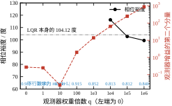
表 55-9 读下来有三点值得注意。
第一，q\le10^{3} 的五行全部“无穿越”，PM 无法定义。此时能看的只有 GM 与 \min|1+L|：GM 从 44.3 dB 单调降到 22.1 dB，\min|1+L| 从 0.9832 单调降到 0.8517。两个指标都在变差，也就是说 q 在这个区间内不但没有恢复裕度，还让 Kalman 不等式的违反程度加深了。
第二，q=10^{4} 时突然出现穿越，PM =116.2462^\circ，比纯 LQR 的 104.12^\circ 还高。这看起来像“超额恢复”，但同一行的 GM 只有 19.224 dB、\min|1+L|=0.8129，是七行里最差的两个数。相位裕度高不代表整体鲁棒性好——在对象输入端量出的 PM 只反映穿越点附近的行为，而 GM 与 \min|1+L| 反映的是整条曲线。
第三，q=10^{6} 时 PM 回落到 99.4532^\circ，GM 微升到 20.278 dB。这是“恢复得过于激进”的表现：L 的第二个分量涨到 872.64，观测器把测量噪声放大了三个数量级，高频段回路增益抬高，相位特性反而偏离了 LQR 的形状。
所以准确的结论是：前馈型 LTR 在 q 的某个中间区间能让穿越点附近的相位裕度接近 LQR，但不能同时保住 GM 与 Kalman 不等式；q 过大反而全面恶化。 工程上取 q 的量级应当由噪声水平定，而不是“越大越好”——q 的物理含义就是过程噪声强度，超过真实噪声量级就是在骗自己。
CARE 是二次矩阵方程，通用做法是 Schur 方法（solve_continuous_are 内部就是这套）。但如果要在嵌入式设备上在线重解，或者在教学中展示“解是怎么长出来的”，Kleinman 迭代更直观。
算法只有三步：取一个使 A-BK_0 稳定的初值 K_0；解 Lyapunov 方程
(A-BK_i)^{\mathsf T}P_i+P_i(A-BK_i)=-(Q+K_i^{\mathsf T}RK_i) \tag{55-46}
更新 K_{i+1}=R^{-1}B^{\mathsf T}P_i；重复直到收敛。
脚本（报告 13）取 K_0=0.5K^{\star}，起点极点是 -2.118034 与 -1.000000（稳定，满足要求），迭代误差是
3.289\times10^{-3}\to2.415\times10^{-6}\to1.304\times10^{-12}\to1.388\times10^{-16} \tag{55-47}
每一步误差是上一步的平方量级（3.3\times10^{-3} 的平方约 10^{-5}，实际 2.4\times10^{-6}；10^{-6} 的平方是 10^{-12}，实际 1.3\times10^{-12}），二次收敛，3 步到机器精度。图 55-10 是这条收敛曲线的半对数图。
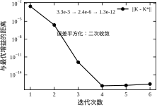
迭代还顺带证明了一件事：稳定化解唯一。从不同的稳定 K_0 出发，只要每步都解 (55-46)，最终都收到同一个 K^{\star}。这一点在数值上很重要——它意味着“求解器的初值不影响结果”，只影响步数。
增广积分。 要无静差跟踪，把误差积分作为一个新状态并入，再对增广系统做 LQR。做法与第54章 §54.9 完全一致，只是增益改由 CARE 给出。代价是阶数上升、峰值推力变大（第54章实测峰值涨到 6.3 倍）。
折扣因子。 把代价改成 \int e^{-2\alpha t}(x^{\mathsf T}Qx+u^{\mathsf T}Ru)dt，等价于把 A 换成 A+\alpha I 再解 CARE。这样可以把闭环极点推到 \mathrm{Re}(s)<-\alpha，得到一个“相对稳定度”的保证。这是 LQR 少数能直接指定极点位置的用法。
增益调度。 对象参数随工况变化时，在几个工作点分别算 K，运行时按工况插值。这不是最优的（每个工作点各自最优，切换过程不最优），但工程上有效，且可以用 P 做切换的稳定性检查。
约束 LQR。 若执行器上限必须严格满足，LQR 的线性解不再适用，正确工具是 MPC（第58章）。一个折中做法是“LQR + 抗饱和”：正常时用 K，饱和时切换到一个保证稳定的辅助律。§55.10 会给出这种退化的定量后果，说明为什么“折中”往往不够。
到这一节为止，LQR 解的都是调节问题：把状态从初值拉回零。但工程上更常见的是跟踪问题：让输出停在某个非零参考值上。这两件事之间的桥，是一个标量前馈增益。
把控制律改成
u=-Kx+Nr \tag{55-48}
其中 r 是参考输入。稳态时 \dot x=0，于是 0=(A-BK)x_{ss}+BNr，即 x_{ss}=-(A-BK)^{-1}BNr。要求 Cx_{ss}=r，就得到
N=\frac{1}{C\,[-(A-BK)]^{-1}B} \tag{55-49}
注意分母里带着 K，所以 N 不是对象的直流增益倒数，而是闭环的直流增益倒数。对象参数与权重一变，N 就得跟着变。
报告 18 的四组结果（参考 r=1）：
Q=I 那一列的 N 恰好是 2.236068、3.741657、10.198039——也就是 2+k=\sqrt{4+1/R}，与 §55.4.1 的闭式解完全一致。这不是巧合，可以直接从物理上读出来：对象直流增益是 1/2（要 x_1=1 需稳态推力 u=2），而闭环稳态时 u_{ss}=-k_1x_1+Nr=-k_1+N，两者相等就给出 N=2+k_1。N 由两部分拼成：抵消反馈带来的稳态偏移（k_1），加上对象本身需要的稳态推力（2）。
这个分解有一个立刻能用的推论：N 随 R 变小而变大，不是“前馈越来越强”，而是“反馈越来越强、需要抵消的偏移越来越大”。R=0.01 时 k_1=8.198，反馈项本身就贡献了 8.198，对象只需要 2。所以激进的权重必然带来大的 N，而 N 直接乘在参考上，参考一跳跃，控制量就跳——r 从 0 跳到 1 的瞬间，u(0)=N=10.198 N。这一点在 §55.10 的饱和讨论里会再次出现：跟踪阶跃比调节初值更容易撞上限。
前馈的局限也要说清楚。它只能抵消模型已知的稳态偏差。报告 18 的后三行把真实刚度改成 k=1.6 与 k=2.4（设计仍按 k=2、R=1），参考 r=1 时的稳态输出分别是 1.217857 与 0.848259——偏差 +21.8\% 与 -15.2\%，与刚度误差（\pm20\%）同量级但不对称。若连 N 都不加、只用 u=-Kx+r，同样两个工况的稳态输出掉到 0.544642 与 0.379353，偏差 -45.5\% 与 -62.1\%。可见前馈把静差从“量级性错误”降到了“与参数误差同阶”，但降不到零；而且它的补偿是“一次性”的，参数继续漂移就会重新出现偏差。
要真正消掉静差，只有两条路：把误差积分增广进状态（§55.9.6 第一条），或者用观测器在线估出等效扰动再前馈补偿。前者会提高阶数、放大峰值推力；后者依赖扰动模型。工程上常见的选择是“N + 积分”，N 负责把大头补掉，积分负责收尾——这样积分器的负担小，抗饱和也容易做。
§55.9.2 把观测器接上以后，系统里就有了两个 Riccati 方程。它们长得几乎一样，但管的事完全不同，混淆是初学者最常见的错误。
控制器那一个是 CARE：输入 (A,B,Q,R)，输出 K，它决定闭环极点往哪放。滤波器那一个是“对偶 CARE”：输入 (A^{\mathsf T},C^{\mathsf T},W,V)，输出 L，它决定估计误差衰减多快。两者的数学形式一一对应——把 A\to A^{\mathsf T}、B\to C^{\mathsf T}、Q\to W、R\to V 就换过去了——但物理含义毫无关系：前者在“性能与用力”之间兑换，后者在“估计快慢与噪声放大”之间兑换。
分离原理保证的是：把两者拼起来，2n 个闭环极点是 \mathrm{eig}(A-BK) 与 \mathrm{eig}(A-LC) 的并集，稳定性不会互相破坏。但它只保证极点，不保证回路形状。 报告 11 把这件事量化得很清楚：固定 K 为 R=0.01 的 LQR 增益（K=[8.198039,\;8.198039]，单独看 PM =104.12^\circ、GM 无穷、s=1.0000），只改观测器的权重 q（q 越大观测器越快）：
| q | L | PM / deg | GM / dB | s=\min\lvert1+L\rvert |
|---|---|---|---|---|
| 0 | [0.6720,\ -0.2742] | 无穿越 | 44.324 | 0.9832 |
| 1 | [0.7076,\ -0.2497] | 无穿越 | 43.221 | 0.9811 |
| 10 | [0.9747,\ -0.0250] | 无穿越 | 37.763 | 0.9663 |
| 100 | [2.2301,\ 1.9867] | 无穿越 | 28.438 | 0.9154 |
| 1000 | [5.3479,\ 13.7998] | 无穿越 | 22.111 | 0.8517 |
| 10^{4} | [11.3576,\ 63.9973] | 116.2462 | 19.224 | 0.8129 |
| 10^{6} | [41.7885,\ 872.6414] | 99.4532 | 20.278 | 0.8398 |
这张表里有一个必须读出来的矛盾。 q 从 0 涨到 10^{4}，相位裕度从“无穿越”变成 116.2^\circ（比 LQR 的 104.1^\circ 还大），看起来回路恢复得很成功；但同一行里 s 从 0.9832 掉到 0.8129，Kalman 不等式那层“Nyquist 曲线永远在单位圆外”的保护已经没有了。两个指标朝相反方向走，说明回路恢复恢复的是“穿越点附近的形状”，不是“整个回路的不等式”。
原因不难找：观测器越快，L 越大，回路里多出来的那个观测器动态在高频段引入相位超前与增益抬升，Nyquist 曲线在某个频段被拉进了圆内（s<1），尽管穿越点上的相位差反而更好看。工程上的读法是：PM/GM 是“局部指标”，s 是“全局指标”，两者必须一起看。只看 PM 就说“LTR 成功”是会被误导的。
这张表还给出一个选 q 的实用边界。q\le100 时 s 还在 0.91 以上，观测器比控制器慢（L 的第一分量 2.23 对 K 的 8.20），两个回路在频域上分得开，互不干扰；q\ge10^{4} 时 L 的第一个分量已经超过 K，观测器比控制器还快，噪声放大与 s 的退化同时出现。所以“观测器要比控制器快 2~5 倍”这句老话的定量版本是：q 停在 10^{2} 附近，别去追 10^{4}。真要更快的估计，该换的是传感器而不是权重。
前面九节的推导都在连续域的纸上完成。真正写进控制器时，至少还有四道落差：采样、限幅、数值、算力。这一节按“最容易翻车”的顺序处理，每个结论都给出实测数字。
连续 LQR 给出的 K 无法直接上机，必须先用零阶保持离散化，再解 DARE 得到 K_d。这两步之间藏着第一个陷阱：K_d 和 K_c 不是同一个数，且差距随带宽增大而迅速拉开。
取 T_s=0.05 s（20 Hz，工业上很常见的控制周期），对四组 R 分别算连续与离散增益，结果如表 55-10。
| R | K_c | K_d | k_1 相对偏差 | 连续快极点 | 离散快极点 |
|---|---|---|---|---|---|
| 1 | [0.236068,\ 0.236068] | [0.222934,\ 0.222747] | -5.56\% | -2.2361 | 0.8942 |
| 0.1 | [1.741657,\ 1.741657] | [1.582701,\ 1.581472] | -9.13\% | -3.7417 | 0.8296 |
| 0.01 | [8.198039,\ 8.198039] | [6.330808,\ 6.326376] | -22.78\% | -10.198 | 0.6038 |
| 0.001 | [29.685959,\ 29.685959] | [14.110327,\ 14.100928] | -52.47\% | -31.686 | 0.2339 |
表 55-10 同一组权重下连续增益与 T_s=0.05 离散增益的对照
读这张表要注意三件事。
第一，慢极点被采样“钉住”了。四组权重的连续极点里总有一个恰好是 -1（这是 §55.4.3 的结论），离散后它落在 e^{-0.05}=0.9512，四行完全相同。这部分信息没有损失。
第二，快极点被采样“按住”了。R=10^{-3} 的连续设计想把快极点放到 -31.686，对应的时间常数是 0.032 s，而采样周期是 0.05 s——快极点的一个时间常数还不到一个采样周期，控制器根本来不及响应。DARE 于是选择了一个它做得到的极点：0.2339 折回连续域是 \ln(0.2339)/0.05=-29.06，比连续解“慢”了 8.3%。
第三，增益的退让幅度是非线性的。R=1 时 K_d 只比 K_c 小 5.56\%，R=10^{-3} 时小了 52.47\%。这不是数值误差，而是离散 LQR 在采样受限时的最优妥协：既然快极点做不到，就不如把增益降下来，避免在两个采样点之间产生剧烈抖动。
工程上判断“T_s 够不够”有一条经验判据：让穿越频率满足
\omega_cT_s\le0.1\sim0.2 \tag{55-50}
R=10^{-3} 的穿越频率是 29.6185 rad/s（报告 10），\omega_cT_s=1.48，比上限大了近十倍，表 55-10 里 -52.47\% 的退让就是这么来的。若确实需要这个带宽，正确做法是把 T_s 降到 0.005 s 量级（\omega_cT_s=0.148），而不是硬用 K_c。
LQR 的推导里，u 的取值范围是整个 \mathbb{R}。真实执行器有上限，最常见的实现是在输出端加一个 clip。这一个动作会把前面所有定理的前提打掉。
对象仍是 m=1,k=2,c=3，取 x_0=[3,0]^{\mathsf T}（比前面几节的 [1,0] 大，是为了让峰值推力真的撞上限），T_s=0.05 s，限幅 \pm5 N。四组 R 的结果列在表 55-11。
| R | K_d | 无饱和峰值 | 无饱和 t_s | 限幅后峰值 | 饱和拍数 | 饱和占比 | 限幅后 t_s |
|---|---|---|---|---|---|---|---|
| 1 | [0.222934,\ 0.222747] | 0.6688 | 4.500 | 0.6688 | 0 | 0.0\% | 4.500 |
| 0.1 | [1.582701,\ 1.581472] | 4.7481 | 4.200 | 4.7481 | 0 | 0.0\% | 4.200 |
| 0.01 | [6.330808,\ 6.326376] | 18.9924 | 4.000 | 5.0000 | 6 | 1.0\% | 4.100 |
| 0.001 | [14.110327,\ 14.100928] | 42.3310 | 3.950 | 5.0000 | 7 | 1.2\% | 4.050 |
表 55-11 执行器饱和对闭环性能的影响（x_0=[3,0]^{\mathsf T}，限幅 \pm5 N）
这张表的信息分两层。
浅层是“前两行完全不受影响”。R=1 的峰值需求只有 0.67 N，R=0.1 是 4.75 N，都在 5 N 以内，限幅器从未动作，性能与线性预测一模一样。这说明限幅不是一律有害，而是有触发条件：只要设计点的峰值需求小于上限，线性结论就成立。
深层是“后两行的饱和占比只有 1\%，但性能确实退化了”。R=0.01 的峰值需求是 18.99 N，是上限的 3.8 倍；R=10^{-3} 是 42.33 N，是上限的 8.5 倍。这两组在起始的 6\sim7 拍里把 u 一直顶在 5 N，之后才退回线性区。图 55-11 画的是 R=10^{-3} 的情形：左格是位移，右格是控制量，黑色实线是无限幅的线性预测，红色虚线是加了 \pm5 N 之后的响应。
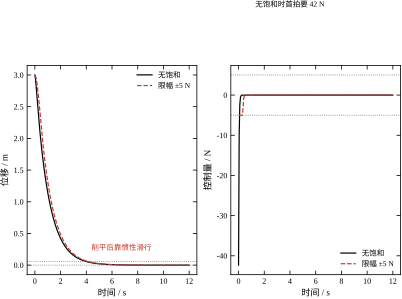
可以看到位移在饱和期间几乎沿一条直线滑行——因为推力被钉死，加速度是常数，轨迹退化成抛物线；控制量则在前 0.35 s 被削成一段平顶。
值得强调的是 t_s 的变化方向：加限幅后 t_s 从 3.950 变成 4.050，慢了 2.5\%。这个数看起来很小，但它是在“只需要多花 7 拍”的前提下得到的。如果初值再大一点、上限再低一点，这个差距会成倍放大。
表 55-11 最容易被误读的地方是“饱和占比只有 1\%，所以影响可以忽略”。这个推理是错的，原因在于饱和发生在最关键的起始段，而那里的状态偏差最大。
换一个对象看得更清楚：双积分器
A=\begin{bmatrix}0&1\\0&0\end{bmatrix},\qquad B=\begin{bmatrix}0\\1\end{bmatrix} \tag{55-51}
取 Q=I、R=1，连续 LQR 给出 K=[1,\ 1.732051]，极点是 -0.866\pm0.5j；T_s=0.05 s 离散后 K_d=[0.957627,\ 1.682945]，线性设计的 2\% 调节时间是 4.80 s，且这个时间与初值无关（指数衰减的固有性质）。
现在把推力限到 0.3，取三组初值实跑：
三组都收敛，没有出现教科书里那种极限环或发散，但调节时间从 4.80 s 涨到 16.50 s，是线性预测的 3.4 倍。原因很直白：双积分器在饱和期间等效于开环（A 的特征值是 0,0，临界稳定），推力被钉在 0.3 上，位移只能老老实实按 0.15t^2 增长，直到速度积累够了才开始刹车。线性设计假设“想用多大推力就有多大”，这个假设在起始段失效，而起始段恰好决定了整段轨迹的形状。
本例的弹簧-阻尼对象（A 的特征值是 -1,-2，本身稳定）没有发散风险，饱和只造成性能退化；换成倒立摆、飞行器这类开环不稳定的对象，饱和期间的等效开环是发散的，6 拍的削平就足以把状态推到线性设计从未覆盖的区域，此时“1\% 占比”完全失去意义。
既然削平会破坏最优性，工程上的补救思路有三类。
第一类是条件切换。 检测到 |u| 撞上限时，把增益换成一个“保守版” K_{\mathrm{sat}}（例如把它对应的闭环极点整体左移），退出饱和后再切回 K。这种做法能保证局部稳定，但切换瞬间的 u 会跳变，且两个闭环的 Lyapunov 函数不同，拼起来不构成全局证明。§55.9.6 提到的“LQR + 抗饱和”就是这一类，它的效果依赖切换逻辑的设计，不是免费的。
第二类是参考重整（reference governor）。 不改控制器，改给定：当预测到当前给定会导致饱和时，先把给定压下来，等状态跟上再逐步放开。它对跟踪问题有效，对调节问题（本例这种从初值回到零）没有用武之地，因为初值不是可以商量的东西。
第三类是显式把约束写进优化。 这就是 MPC（第58章）：每一步在线解一个带 |u|\le u_{\max} 的二次规划。它从原理上就不知道“无限推力”是什么，因此不会出现“设计时假设一套、运行时又削平”的错配。代价是需要在线算 QP，算力需求比一次矩阵乘法高三个数量级。
对本例这种二阶对象，还有一个更朴素的第四类做法：在选权重时就把峰值需求算出来，让它落在上限之内。 这正是 §55.8 的 Bryson 规则在做的事——用 u_{\max} 反推 R，使峰值推力恰好等于上限。表 55-8 的“峰值占比”一列就是这件事的验收指标。它不保证任何初值下都不饱和（初值变大时峰值还是会涨），但至少保证设计点附近是自洽的。
CARE 是矩阵方程，数值上比标量方程脆弱。上机时建议遵守三条约定。
约定一：先用标度不变性把矩阵条件数压下来。 §55.4.2 已经证明 (Q,R) 整体乘一个正数不改变 K。工程上可以先把 Q 的最大对角元归一到 1，让 CARE 里的各项量级接近。这一步不改变任何结论，只是让求解器的舍入误差小一些。
约定二：解完对称化，再验残差。 通用求解器返回的 P 可能有 10^{-16} 量级的非对称部分。上机前做一次
P\leftarrow\frac{P+P^{\mathsf T}}{2} \tag{55-52}
然后代回 (55-9) 算残差。本章所有算例的残差都在 10^{-16} 量级（报告 1），若你的实现算出 10^{-6} 以上，说明对象不可稳或 R 接近奇异，不要往下走。
约定三：多输入时用 solve 不要用 inv。 单输入时 R 是标量，K=R^{-1}B^{\mathsf T}P 直接除即可；多输入时 R 是矩阵，应解 RK=B^{\mathsf T}P，而不是先算 R^{-1} 再乘。后者在 R 接近奇异时会把误差放大几个数量级。
还有一条与硬件相关的检查：本章算例的 P 特征值是 0.183141 与 1.288995，比值 7.04，条件数很好。若在定点 DSP 或单精度浮点上实现，条件数超过 10^{3} 就要考虑换双精度或做变量缩放——CARE 的解对 P 的精度很敏感，而 K 又直接由 P 决定。
把上面几节收拢成一份可验收的清单。一个 LQR 控制器交付时，应当同时给出五项，缺一项就无法判断它能不能上机：
本章的 R=10^{-3} 算例按这五项交付，结果是：K=[29.685959,\ 29.685959]（连续）与 [14.110327,\ 14.100928]（T_s=0.05），残差 2.220\times10^{-16}，极点 -1 与 -31.686，PM 93.8631^\circ、GM 无穷（相位不到 -180^\circ）、s=1.0000，峰值推力 42.33 N 而执行器只有 5 N，\omega_cT_s=1.48。五项里有两项不合格（饱和包线与采样比），这就明确告诉设计者：这组权重在 20 Hz 的控制器上不能用，要么降带宽（增大 R），要么提高采样率。
这份清单的意义在于把“最优”从一个数学结论变成一个可核查的工程状态。LQR 的解在数学上永远存在（只要可稳），但它在具体硬件上是否可用，取决于这五个数，而不取决于 J 有多小。
低成本的伺服驱动器常用定点 DSP，增益必须存成定点数。一个自然的问题是：K 保留几位小数才够？报告 17 用 Q=I、R=0.01 的激进设计（K=[8.198039,\;8.198039]）做了量化实验，把增益按 2^{-n} 的步长取整，再代回闭环仿真（J 统一用 Q=I、R=1 的尺子量，便于横向比较）：
| 小数位 n | 步长 | 量化后 K | 增益相对误差 | 最右极点 | J 偏差 |
|---|---|---|---|---|---|
| 4 | 0.0625 | [8.187500,\ 8.187500] | 0.1286\% | -10.1875 | 0.117\% |
| 6 | 0.015625 | [8.203125,\ 8.203125] | 0.0620\% | -10.2031 | 0.056\% |
| 8 | 0.003906 | [8.199219,\ 8.199219] | 0.0144\% | -10.1992 | 0.013\% |
| 10 | 0.000977 | [8.198242,\ 8.198242] | 0.0025\% | -10.1982 | 0.002\% |
结论比很多人预想的宽松：只留 4 位小数（步长 0.0625）就够用了。 增益误差 0.13\%，J 只差 0.117\%，最右极点从 -10.1980 挪到 -10.1875，2\% 调节时间仍是 4.016 s。而且这个结论对“激进设计”也成立——k_1=8.198 已经不算小，量化误差占的比例依旧很低。
为什么对精度这么不敏感？因为 J 在最优解处是驻点。把 K=K^{\star}+\Delta K 代入代价，一阶项因为 \partial J/\partial K|_{K^{\star}}=0 而消失，剩下的是 \Delta K 的二次项。若用同一组权重度量，J 的相对偏差应当是 (\Delta K/K)^2 量级，即 10^{-6}。表里看到的是 0.117\%（约 10^{-3}），比二次项大三个数量级，原因是度量用的尺子（Q=I、R=1）与优化用的权重（R=0.01）不是同一把——换了尺子，驻点条件不再成立，一阶项回来了。四行的比值 0.117/0.1286=0.91、0.056/0.0620=0.90、0.013/0.0144=0.90 也确实是“一阶”的比例，这正好反过来印证了上面的解释。
真正卡住定点实现的不是精度，而是动态范围。本章参数下 k_1 可以从 R=10^{4} 时的 0.000025 变到 R=10^{-6} 时的 998，跨七个数量级；同一个 Q 格式不可能同时覆盖两者。工程上有三种处理：
第一，接受“一个工作点一个格式”。控制器既然按某组权重设计，K 的量级就是已知的，可以按 k_{\max} 定标（例如 k_1\le10 时用 Q3.12），并在标定阶段就锁死。
第二，把增益吸收进状态量纲。若把位移用 1 mm 而不是 1 m 计量、速度用 1 mm/s，K 的两个分量会自动落到相近的量级，定点格式也能统一。这本质上是 §55.2 标度不变性的硬件版。
第三，直接用浮点。Cortex-M4F 及以上的核带单精度 FPU，一次乘加与定点同周期，“省浮点”往往省不出什么，反而丢掉动态范围。
还有一处容易忽略：乘法溢出比增益精度更常见。u=-k_1x_1-k_2x_2 的中间结果可能超出 Q 格式的表示范围，尤其是初值较大或状态估计出错时。常规做法是给中间结果留一位符号保护位，并在饱和前做钳位——这与 §55.10.2 的执行器限幅是两件事：前者是数值溢出，后者是物理上限，但两者的后果都是“控制量被削平”，排查时要分清。
K 是一个无量纲的数，执行器只认牛、安、伏。中间这一步换算如果做错，前面所有设计都白费。这一节把换算拆成四步，每一步都给出本章的可核对数字。
第一步：稳态保持力。 若参考值是 r，稳态控制量是 u_{ss}=N-k_1r。本章 N=2+k_1，于是 u_{ss}=k\,r——恰好就是“把弹簧压到 r 需要多大力”。r=1 时是 2.000 N。这个数最容易算对，也最容易被忽略：很多人只盯着峰值，结果执行器额定值选成 2 N，稳态就顶着上限跑，没有余量给扰动。
第二步：首拍冲击。 阶跃起始瞬间 x=0、u(0)=N，本章是 2.236 N。它比保持力大 11.8\%，差额正好是 k_1。一般情况下首拍是“保持力 + 反馈项”，反馈项的大小由 k_1 决定，而 k_1 又由 q_1/R 决定——所以首拍冲击是权重直接决定的，不是对象决定的。报告 2 把这条关系铺开：R 从 100 降到 10^{-4}，峰值从 0.0025 N 涨到 98.02 N，跨四个半数量级，而 t_s 只从 4.599 s 降到 3.922 s。这也是 §55.4.7 那句“压 R 换速度是亏本买卖”的硬件版本。
第三步：初值决定的瞬态。 若系统从非零初值启动（例如上位机给了 3 mm 的阶跃），峰值不再是 N 而是 |Kx_0|。报告 12 用 x_0=[3,0]^{\mathsf T}、R=0.01 算得峰值 18.99 N，是执行器上限 5 N 的 3.8 倍。这时限幅器会把控制量削平，饱和拍数 6、占比 1.0\%，t_s 从 4.0 s 退化到 4.1 s。数值上看退化不大，但饱和期间闭环不再是 A-BK，所有基于 A-BK 的结论（裕度、J 最优性、极点位置）同时失效，这才是真正的问题。
第四步：功率与热。 力乘速度是瞬时功率，峰值既不在首拍（那里速度为零）也不在末段（那里力为零），而在两者之间。本章 x_0=[1,0]^{\mathsf T} 的响应里，基准组的峰值功率是 0.051 W（出现在 0.262 s），R=0.01 组是 1.975 W（出现在 0.065 s）；相应的峰值速度是 0.522 与 0.777 m/s。功率差 39 倍，大于峰值力的 35 倍——功率把“激进”的代价又放大了一档，因为快极点同时抬高了力和速度。热约束看的是长时间平均值而不是峰值，LQR 的响应又是衰减的，所以平均功率远小于峰值，热通常不是瓶颈；真正会被热卡住的是“持续跟踪斜坡参考”这类工况，那时 u 长期停在 k\,r 附近，得按连续功率核算。
四步走完，执行器选型就有一个明确的判据：额定值取 \max(u_{ss},\,u(0)) 再留 20\%\sim30\% 余量，峰值能力（短时）取 \max|Kx_0| 的 1.2 倍。本章基准组因此需要 3 N 额定、3 N 峰值——一个很小的执行器就够；而 §55.8.8 表里 1.5 s 那组需要 10.2 N 首拍、13 N 峰值，是前者的四倍。同一个对象、同一套代码，只因为指标从 4.5 s 提到 1.5 s，硬件成本翻了两番，这就是 LQR 里“性能”两个字的实际价格。
LQR 的模型里，执行器是“给多少出多少”的理想环节。真实的阀门、丝杠、液压缸有三个模型外的特性：死区（输入小于某个阈值时没有输出）、摩擦（静摩擦尤其讨厌）、回程间隙。三者都不大，但都能让一个在仿真里完美收敛的控制器在实机上“抖”。
死区的影响可以被增益直接放大，这一点必须先算。 若执行器死区是 \delta，那么稳态时控制器能发出的最小有效力就是 \delta，它对应的位置偏差是
|\Delta x|=\frac{\delta}{k_1}
本章基准 k_1=0.236068，\delta=0.1 N 时偏差 0.42——与初始位移 1 是同一量级，等于这个调节回路被死区彻底废掉。同样的 \delta 若配 R=0.01 那组（k_1=8.198），偏差只有 0.0122。所以“高增益能压死区”是真的，而且压得很有效；反过来说，一个为省力而选了 R=1 的设计，遇到 0.1 N 的死区就会彻底失效，此时该做的是换执行器（减小 \delta）而不是继续调权重。
静摩擦会制造极限环。 死区让系统停在某个位置不动，而积分器（若装了）会继续累积，直到控制量突破死区，系统跳一下，再停住——这就是低速爬行。判断方法很直接：把仿真里的执行器换成“死区 + 静摩擦”模型，看 x_1 是否在某个非零值附近振荡。若振荡，先查积分增益是否太大，其次查 k_1 是否太小。LQR 本身没有积分器，所以它不会主动制造这种振荡，但它也没有能力消除——这是 §55.9.6 那条“增广积分”的隐藏代价。
回程间隙等价于相位滞后。 间隙 \epsilon 在换向时表现为“输出不动而输入已变”，其效果与纯延迟相似，可以把 §55.6.9 的延迟预算分一部分给它。经验上把间隙折算成 \epsilon/\dot x_{\text{typ}} 的等效延迟，代进预算里扣掉。
这三个非线性的共同点是：它们都在小信号区起作用，而 LQR 的裕度指标都是在大信号线性区算的。 所以 §55.6 那一套 PM/GM/s 全部合格，仍可能在实机上抖。唯一的办法是把非线性写进仿真，而不是指望线性指标覆盖它们。这也是为什么工程上交付 LQR 控制器时，除了 §55.10.6 那五项，还要加一项“非线性仿真通过”。
仿真里所有结论都建立在 A-BK 这一条闭环上，而实机里同一个 K 会同时受传感器噪声、执行器非线性、采样与延迟三个环节的影响。上台架后第一件事不该是“看它稳不稳”，而是按顺序做三项试验：每项有明确判据，前一项不过就不进入下一项。顺序本身是有讲究的——先做扛得住噪声、判据最硬的那一项，避免在信号质量还没确认时就去解读频率响应。
第一项：小信号闭环阶跃。 参考取行程的 2\% 左右，同时记录 y(t) 与 u(t)。要核三个数：首拍 u(0)、2\% 调节时间 t_s、稳态值。本章基准组按比例缩放后对应的期望是首拍等于 N 的相应份额、t_s=4.503 s、稳态静差为零。三者中任一项偏差超过 20\%，就不要往下做——先查采样周期与增益是否对应（§55.5.7 说 T_s 从 2 ms 放大到 50 ms 时 k_1 会少一半），再查 u 的符号约定与执行器标定，最后才怀疑 A,B 的辨识。这一项之所以排第一，是因为它只用到低频信息，对噪声和延迟都不敏感；它一旦不对，后面的频率响应无论测得多准都无从解释。
第二项：闭环频率扫描。 保持闭环，在参考上叠加小幅正弦，频率从 0.1 rad/s 一直扫到穿越频率的十倍以上，量 |S(j\omega)| 并反推 |1+L|。判据有两条：低频端实测的 |S(0)| 应当接近 §55.6.8 算出的值（基准组 0.894），全频段不应出现超过 1 的峰。若某个频点的 |S| 冒到 1.3 以上，几乎可以断定该频段存在模型之外的谐振或未建模延迟，这时正确的动作是补模型（加一个二阶谐振环节或一段纯延迟再重算），而不是回头调 Q,R。权重只改变增益，改不动已经存在的谐振峰；§55.6.4 那句“LQR 的灵敏度形状由对象决定”在实机上就是这么体现的。
第三项：极限工况。 用最大允许初值与最陡的参考各做一次，记录饱和拍数、饱和期间的输出轨迹、退饱和后回到线性区所需的时间。判据是“退饱和后 200 ms 内回到线性区”，且整段 t_s 的退化不超过 20\%。本章报告 12 的数字（饱和拍数 6、占比 1.0\%、t_s 从 4.0 s 到 4.1 s）可以作为“可接受”的参照。若退化远大于此，说明执行器上限选得太紧，此时该做的是按 §55.10.8 的四步重新选型或按要求放宽指标，而不是加抗饱和补偿——抗饱和只能把失稳拉回稳定，不能把已经削掉的性能还回来。
这三项做完，§55.10.6 清单里的五类数字各被验过一遍：第一项验增益与极点，第二项验裕度与灵敏度形状，第三项验饱和包线。此时手上有一组“实机口径”的基线数字，之后每次改权重、换传感器、调采样，都可以拿同一套试验复测并与基线对比。这一步看似只是流程，实际上决定了后面所有讨论是否有共同语言——没有基线，一次“感觉抖得厉害”的抱怨无法转成“某频点 |S| 超了 0.3”这样的可修问题。
试验记录建议只留三列：工况（参考幅值、初值、T_s）、仿真期望值、实测值。三列填满，任何一次“改坏了”都能立刻定位是被改的那一项出的问题，还是三项之外的因素（温度、供电、装夹刚度）混进来了。本章所有数字都可以直接抄进“仿真期望值”这一列：N=2.236 N、t_s=4.503 s、PM =65.5^\circ、GM =6.02 dB、饱和拍数 6。它们不是漂亮的门面数字，而是这套设计在纸面上已经承诺过的东西——实机达不到，说明承诺的条件（线性、定常、无延迟）在你的台架上不成立，该补的是条件，不是权重。
前九节讲了 LQR 怎么算、怎么调、怎么改。这一节退一步，回答“什么时候该用它、什么时候不该用”。判断的依据不是它是否“先进”，而是它的前提在你的问题上是否成立。
极点配置（第54章）和 LQR 都用状态反馈，都给出 K，闭环都稳定。区别在于极点配置只指定位置，不指定代价；LQR 只指定代价，极点由代价推出。
同一个对象、同一个初值，两组的实测对比如表 55-12。
| 设计 | K | 闭环极点 | J | 峰值推力 | t_s |
|---|---|---|---|---|---|
| LQR，Q=I,R=1 | [0.236068,\ 0.236068] | -2.2361,\ -1.0000 | 1.236068 | 0.2361 | 4.503 |
| 极点配置 | [6.000000,\ 1.000000] | -1,\ -2 | 9.875000 | 6.0000 | 2.591 |
| LQR，Q=I,R=1/60 | [6.000000,\ 6.000000] | -1,\ -8 | 1.100000 | 6.0000 | 4.045 |
表 55-12 同一对象上极点配置与 LQR 的代价对照
直接比第一、二行：极点配置的快 1.74 倍（2.591 对 4.503）是用 25 倍的峰值推力换来的，代价函数是 LQR 的 8 倍。这不是说极点配置“差”，而是说它没有回答“这个速度值不值”。
真正能说明问题的是第一、三行的对比：把 R 调到 1/60，LQR 的 K 恰好等于 [6,6]，峰值推力也是 6.0 N——用同样的力，LQR 的 J 是 1.1，极点配置是 9.875，差 8.98 倍。差在哪里？极点配置把两个极点都放在 -1 与 -2，速度分量衰减得慢；LQR 把快极点推到 -8，速度很快收住，位移反而更平稳。两者用的是同样的推力预算，但分配方式不同。
这就是 LQR 相对极点配置的核心优势：当你只能说出“推力别太大、位移别太大”这类模糊要求时，LQR 能把它翻译成一个唯一的最优解；极点配置要求你先猜极点，而猜错的代价不在设计阶段显现，要等上机才发现。
反过来，极点配置的优势也很明确：它能直接指定极点，包括指定相对稳定度、指定振荡频率。若你有明确的时域指标（例如“必须 2 s 内进入 2% 带”），极点配置一步到位；LQR 得反复试 Q,R 才能凑出来（§55.8 的四个错误全是在这个试错里踩的）。
PID（第44章）不需要模型，只看误差。LQR 需要完整的 A,B，这是它最大的使用门槛，也是它最大的优势来源。
第一个优势是多变量情形下不需要“配对”。PID 用在 n 个输入、n 个输出的对象上，工程上最头疼的是“哪个输入管哪个输出”——配对错了，两个回路会互相打架。LQR 一次性解出整个增益矩阵 K，交叉耦合由 P 的非对角元自动处理，不需要人工配对。§55.4.4 里 P 的非对角元 0.236068 就是这个耦合的定量体现。
第二个优势是权重有物理含义。PID 的三个参数没有直接的物理对应，整定靠经验或规则（Ziegler-Nichols 之类）。LQR 的 Q_{ii} 是“第 i 个状态偏离 1 个单位，我愿意付多少代价”，R 是“用 1 单位推力，我愿意付多少代价”。这个含义让多人协作时的沟通成本低很多——说“位移的权重是速度的 4 倍”比说“把 K_p 再调大一点”清楚得多。
但 PID 有两个 LQR 比不上的地方。一是不需要模型，模型不准时 PID 可能还能用，LQR 会直接算错（K 是基于错误的 A,B 算的）；二是天然的积分作用，PID 的 I 项保证零静差，而 LQR 的最优律不含积分（§55.6.5 实测静差 55.3\%），要无静差必须自己增广（§55.9.6）。
所以选型的分界很清楚：单回路、模型难建、要求零静差——用 PID；多变量、模型可得、指标是“综合权衡”——用 LQR。
MPC（第58章）和 LQR 用的是同一个代价函数，区别只在约束。LQR 是“无约束的 MPC 的解析解”（无限时域、线性、无约束时两者等价），MPC 是“带约束的 LQR 的数值解”。
这个关系的实际含义是：如果你的问题里没有硬约束，用 MPC 是浪费；如果有硬约束，用 LQR 是在自欺。
§55.10.2 的表 55-11 就是“自欺”的定量版本：设计时假设无限推力，峰值需求 42.33 N，实际只有 5 N，运行时靠 clip 补救，t_s 退化 2.5\%，而真实的代价是“这组权重根本不满足执行器约束”。MPC 在第一步就会告诉你“这个 QP 无可行解”或者“给出一个用满 5 N 的最优轨迹”，不会让你带着一个不可行的设计上线。
代价是算力。LQR 上机只需要一次 Kx 的矩阵向量乘（本例 2 次乘加），MPC 每个采样周期要解一个 QP。对二阶对象、20 Hz 的采样率，两者都轻松；对高维对象、1 kHz 的采样率，MPC 的在线算力可能成为瓶颈，这时“LQR + 显式处理约束”仍有市场。
LQR 假设模型是准确的，把“鲁棒性”作为副产品（Kalman 不等式给的 60^\circ 相位裕度）而不是设计目标。H_\infty（第60章）反过来，把“最坏情况下的扰动抑制”直接写进目标函数。
两者的差别在 Q,R 的语义上。LQR 的 Q,R 是“我期望的权衡”，H_\infty 的权重是“我能容忍的最坏扰动”。如果模型误差有明确的界（例如刚度 k 已知在 \pm20\% 内变化），H_\infty 能把这个问题直接写成约束；LQR 只能靠调 R 把裕度做大，做多大算够没有理论指导。
但 H_\infty 的解通常阶数更高（与广义对象同阶），实现更复杂，且它的“最坏情况”往往过于保守——为了应付一个可能永远不发生的扰动，牺牲了大量标称性能。工程上的常见做法是：标称设计用 LQR，若实测裕度不够再考虑 H_\infty 或 \mu 综合。
把上面的对比收成一份“不该用”的清单，比列优点更有用。
模型不可信。 LQR 的 K 对 A,B 的误差没有自适应能力。若对象的参数随工况大范围变化（机器人关节、飞行器在不同马赫数下），单一 K 会失效，应当用增益调度（§55.9.6）或自适应控制。
强非线性。 LQR 是线性设计，工作点附近有效。若状态会大幅偏离工作点（大角度摆动、大范围机动），线性化误差会盖过最优性带来的收益。
硬约束是主要矛盾。 若执行器饱和是设计的主要约束（不是“偶尔撞一下”，而是“经常顶在极限上”），LQR 的前提就不成立，应当直接用 MPC。
要求零静差但没有增广。 纯 LQR 的调节对象是“状态回零”，不是“输出跟踪给定”。跟踪问题必须增广积分或加前馈（§55.6.5）。
对象本身不稳定且容错要求高。 LQR 能稳定不稳定对象（只要 (A,B) 可稳），但它没有故障重构能力。若传感器或执行器可能失效，需要额外的容错逻辑，这不是 LQR 的职责范围。
上面五条“不该用”读起来容易，落到具体项目上还是难决断，因为真实问题总是“模型有点不准、约束有点紧、指标有点含糊”。一个可操作的办法是把判据拆成五个可回答的问题，每个按 0/1/2 打分，总分决定选型方向。
| 判据 | 问什么 | 0 分 | 2 分 |
|---|---|---|---|
| 模型可信度 | 参数能在 \pm20\% 内说清吗 | 完全说不清 | 有实测辨识 |
| 约束松紧 | 峰值需求与上限之比 | >2 倍 | <0.8 倍 |
| 指标形式 | 能写成二次型吗 | 只有“稳就行” | 有明确加权偏好 |
| 静差要求 | 是否必须零静差 | 必须，且不许增广 | 不要求或可加前馈 |
| 状态可得性 | 全部状态可测吗 | 只能测输出 | 全部可测 |
五题满分 10。按本章的算例打分：对象有明确 m,k,c（2 分）、基准组峰值 0.236 N 对上不设限的执行器（2 分）、指标是“t_s 与推力”的加权（2 分）、跟踪可用前馈 N 处理（2 分）、状态为位移与速度（2 分），满分 10，LQR 是最优选择——这也是本章拿它当例子的原因。
反过来，若把同一套代码搬到“只有编码器、没有测速、执行器只有 5 N、还要求零静差”的场合：状态可得性 0 分、约束 0 分、静差 0 分，只剩 4 分。此时正确的做法不是“硬套 LQR 再加一堆补丁”，而是先装测速（或用差分加滤波）、把指标放宽到 t_s\ge2.5 s（§55.8.8 的表说这时只要 2.19 N），再考虑增广积分。LQR 不是不能用在低分场景，而是每缺一分都要用额外结构去补，补到最后已经不像 LQR 了。
这张表的价值在于把“要不要用 LQR”从口味之争变成可讨论的清单。它也解释了为什么工业界 LQR 的实际用量远小于教科书篇幅：真实项目的第二列（约束松紧）经常是 0 分，而这一分恰恰是 LQR 无法用调参补回来的——只有 MPC 能补。
如果只能记一句话：LQR 适合“模型可信、约束不紧、指标是综合权衡”的线性多变量调节问题。 三个条件缺一个，就该考虑它的变体（增广、调度、LTR）或者换工具（MPC、H_\infty、PID）。
这不是贬低 LQR。恰恰相反，正因为它的前提清晰、结论唯一、实现极简（一次矩阵乘），它成了现代控制里最难被替代的一块基石——后面第56章的卡尔曼滤波、第57章的 LQG、第58章的 MPC，代价函数和 Riccati 方程都是从这一章借过去的。把它的边界看清楚，才知道什么时候该借它、什么时候该绕开它。
三个条件也不是并列的，检查有先后。先查模型可信度：它不成立时，后面两条无论多好都没有意义，因为权重算得再准也抵不住 A,B 的错。再查约束紧不紧：这一条决定 LQR 够不够用，够不上就该换工具（MPC），而不是回头调参——权重调不出约束处理能力。最后查指标形式：这一条最软，通常靠前馈（§55.9.7）、增广积分或增益调度补一层结构就能满足，属于“用 LQR 也能做，只是不止一个 K”。本章的例子在三条上全部通过，所以它既是教学算例，也是 LQR 的适用范围边界——越过这个边界，就该翻到后面的章节了。
本章的数字来自两个文件：code/ch055_sim.py 产出 25 组报告，code/ch055_figs.py 产出 11 张插图。前者只依赖 NumPy 与 SciPy，后者额外用 control 库算裕度。这一节讲代码的组织方式与四个关键函数，读者可以照此复现全部结果。
ch055_sim.py 只做数值，不画图、不写文件，所有结果 print 到终端。这样安排是为了让“正文里的每个数字”都能在终端输出里逐字找到——§55.1 到 §55.11 引用的 P、K、极点、J、峰值、t_s、PM、GM、\min|1+L|、饱和拍数，全部有对应的打印行。
ch055_figs.py 只画图，所有数据通过 import ch055_sim as cs 调用前者的函数重算，不读缓存。这样图上看到的曲线与正文写的数字必然是同一份计算的产物。导出统一走 plot_styles.save()，同时生成 SVG 与 PDF：前者嵌进 HTML，后者给印刷。
二十五个报告的顺序按“从方程到工程”排列：报告 1 解 CARE，报告 2–5 扫权重与标度，报告 6–7 验极大值原理与 HJB，报告 8–9 做离散化，报告 10–11 看裕度与 LTR，报告 12 加饱和，报告 13 跑 Kleinman，报告 14 做口径对照（打印在最后），报告 15–16 压在 R\to0 的极限上并从 t_s 反解权重，报告 17 做定点量化，报告 18 做参考跟踪，报告 19 扫采样周期，报告 20 求灵敏度，报告 21 走 Hamiltonian 路径，报告 22 找极点进复平面的分界，报告 23 量灵敏度函数，报告 24 试输出加权，报告 25 看条件数。每组的打印格式固定为“表头 + 数据行 + 读法”，读法那两行是给复现者看的，不进正文。
LQR 的全部代码其实就是两个求解器加一个闭环解析器：
def lqr(Am, Bm, Q, R):
"""连续 LQR：解 CARE，返回 (K, P)。"""
P = solve_continuous_are(Am, Bm, Q, np.array([[R]]))
K = np.linalg.solve(np.array([[R]]), Bm.T @ P).flatten()
return K, P
def dlqr(Am, Bm, Q, R):
"""离散 LQR：解 DARE，返回 (K, P)。"""
P = solve_discrete_are(Am, Bm, Q, np.array([[R]]))
S = np.array([[R]]) + Bm.T @ P @ Bm
K = np.linalg.solve(S, Bm.T @ P @ Am).flatten()
return K, Psolve_continuous_are 和 solve_discrete_are 是 SciPy 的实现，内部走 Schur 方法。注意两处细节：第一，R 要包成 1\times1 的矩阵而不是标量，因为 SciPy 要求 b 是二维的；第二，增益用 solve 而不是 inv，与 §55.10.5 的约定三一致——单输入时两者等价，多输入时前者更稳。
第三个函数是离散化，本章用零阶保持：
def zoh(Am, Bm, Ts):
"""零阶保持离散化：expm([[A, B], [0, 0]] * Ts)。"""
n = Am.shape[0]
Mbig = np.zeros((n + 1, n + 1))
Mbig[:n, :n] = Am
Mbig[:n, n:] = Bm
E = expm(Mbig * Ts)
return E[:n, :n], E[:n, n:]这个写法比 expm(A*Ts) 好，因为它把输入矩阵 B 一起算进去了，得到的是精确的 A_d,B_d，而不是“先算 A_d 再近似 B_d”。构造增广矩阵的技巧来自矩阵指数的性质，任何线性系统离散化都能用。
第四个函数算闭环的四个标量指标，它是正文里 J、峰值、t_s 的唯一来源：
def cost_metrics(Am, Bm, Km, x0):
"""闭环代价：状态积分、控制积分、峰值推力、2% 调节时间。"""
Ac = Am - Bm @ Km.reshape(1, -1)
Wx = solve_continuous_lyapunov(Ac.T, -np.eye(Am.shape[0]))
Wu = solve_continuous_lyapunov(Ac.T, -(Km.reshape(-1, 1) @ Km.reshape(1, -1)))
Jx = float(x0 @ Wx @ x0)
Ju = float(x0 @ Wu @ x0)
...\int_0^\infty x^{\mathsf T}x\,dt 用 Lyapunov 方程精确求，而不是对轨迹做数值积分：解 A_c^{\mathsf T}W_x+W_xA_c=-I 后，积分值就是 x_0^{\mathsf T}W_xx_0。这样得到的 J_x 与 x_0^{\mathsf T}Px_0 在最优解上相等（J_x+Ju=1.236068 对 x_0^{\mathsf T}Px_0=1.236068），这个等式本身就是对 CARE 解的一次校验。
第一处：B 的维度。 本章 B 是 2\times1，B @ K 在 K 是一维数组时会报维度不匹配。代码里统一写成 B @ K.reshape(1, -1)，得到 2\times2 的闭环矩阵。这个错误在报告 12 上真的踩过：Bd = Bd.flatten() 写在 dlqr 之前，导致 solve_discrete_are 报“矩阵行数不一致”。正确顺序是先 Bd.reshape(-1, 1) 喂给 dlqr，仿真循环里再用 Bd.flatten() 做向量乘。
第二处：L 的符号。 报告 11 的 LTR 需要构造观测器回路，代码里 K_c 的状态空间实现是
Kc = ct.ss(Am - Bm @ Km.reshape(1, -1) - Lm @ Cm, Lm,
Km.reshape(1, -1), 0.0)其中 D=+K_m 对应 u=-K\hat x 的负号已被吸收进 C 的符号里。最初写成 -K_m 时，回路增益整体反相，PM 与 GM 全部算成 inf 或负值——这类错误在频域里表现为“相位凭空多了 180^\circ”，看 Bode 图一眼能发现，看数字则很难。
若要把它搬到嵌入式控制器上，只需要三样东西：一个 2\times2 矩阵乘、一个 K 的常量数组、一个 clip。本章的 K 是离线算好的，在线只需要
u = -(K[0] * x[0] + K[1] * x[1]);
if (u > UMAX) u = UMAX;
if (u < -UMAX) u = -UMAX;CARE 不需要在目标机上解。真正需要在线重解的情况只有两种：对象参数会变（用增益调度，离线算好几张表），或者要在线调整权重（这时才需要把 Schur 方法搬上去，代码量约两千行，通常不值得）。
移植时唯一要注意的是定点数的标度。本章算例因为 Q=I 对称，K 的两个分量恰好相等（0.236068 与 0.236068），用同一个定标就行；换成位移与速度量纲差得远的对象（例如位移以米计、速度以毫米每秒计），两个分量可能相差三四个数量级，定点实现要分别定标，否则小分量的信息会被量化噪声吃掉。
在项目根目录依次执行
"D:\Anaconda3\envs\py311\python.exe" code/ch055_sim.py
"D:\Anaconda3\envs\py311\python.exe" code/ch055_figs.py第一条打印二十五组报告，约几十秒；第二条在 figs/ch055/ 下生成 11 组 SVG 与 PDF。若只想核对某一组，可以单独调用，例如
import sys; sys.path.insert(0, "code")
import ch055_sim as cs
cs.report_saturation()全部报告都是确定性的，没有随机数，同一台机器上重复运行结果逐位相同。这也是为什么正文敢把残差写到 10^{-16}——它不是“大约为零”，而是每次都是这个值。
同一段代码，换个人跑，正文里的数字往往对不上。本章踩过的偏差集中在四处，写下来省得后来者重走。
第一处：调节时间对谁归一。 “2% 调节时间”里的 2% 必须说明是对什么而言。本章统一对 \max|x_0| 归一，x_0=[1,0]^{\mathsf T} 时就是 0.02。若改用“对稳态值归一”，跟踪工况下数值会差一截；若改用“对峰值归一”，超调响应会得到一个偏乐观的数。更隐蔽的是判据的“持续性”：是“最后一次超出 2\% 的时刻”还是“第一次进入 2\% 的时刻”，两者差一个回摆的时间。本章用前者，代码里那句 if abs(x[0]) > 0.02: ts = ... 一直扫到终点，取的正是最后一次。
第二处：积分步长与判定网格。 报告 1 的 t_s=4.503 s 是在 40001 点、10 s 的网格上取的，分辨率 0.25 ms；报告 19 的 t_s 按采样周期取整，T_s=0.1 s 时分辨率就是 0.1 s。两张表的 t_s 不能逐位对比——报告 19 里 T_s=0.1 与 0.2 都读 4.600，那是网格造成的台阶，不是物理现象。跨表引用时必须带上分辨率，否则会得出“采样变慢反而没影响”的错误结论。
第三处：J 用哪把尺子。 报告 1 的 J=1.236068 是“优化用的权重”（Q=I、R=1）算出来的，报告 2 的 J 列是“各自权重”下的最优值，报告 17 的 J 又统一换回 Q=I、R=1 以便横向比较。三个 J 数值不能直接比大小。判断方法是看表头有没有注明权重：注明了才可比，没注明就只能纵向看趋势。
第四处：峰值是“首拍”还是“全过程”。 x_0=[1,0]^{\mathsf T} 的调节问题里，|u| 的最大值就出现在 t=0（等于 k_1），所以报告 1 的“峰值时刻 =0.000 s”；而跟踪阶跃时峰值是前馈 N，也在 t=0。但报告 12 的初值放大到 [3,0] 后，峰值仍在首拍（18.99 N =3\times6.33），饱和之后才有了新的形状。若有人按“仿真里 |u| 的最大值”去取，会得到同一个数；但若他把首拍漏掉（比如从第二个采样点开始记），就会得到偏小的峰值，进而低估执行器需求。
四处偏差有一个共同根源：指标定义没有随数字一起交付。 这也是 §55.10.6 那份清单要求“增益、极点、裕度、饱和包线、采样比”五项齐全的原因——少一项，读者就无法判断某个数是在什么口径下算出来的。